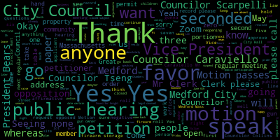
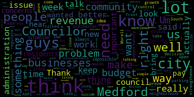
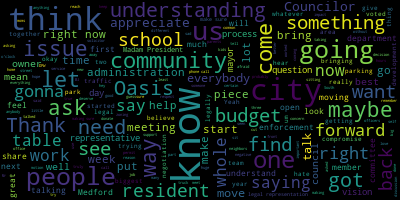
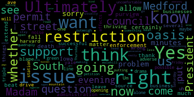
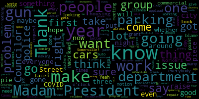
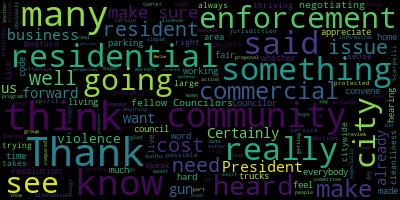

[Morell]: Meeting of the Medford City Council May 23 2023 is called to order Mr. Clerk, please call the roll. He is on zoom. He may have had to leave and come back and he's not. I mean, I can see him.
[Hurtubise]: President seven present please rise.
[Unidentified]: City Council.
[Morell]: Announcements accolades, celebrate Asian American and Pacific Islander Heritage Month and wish our burgeoning AAPI community a happy month. Councilor Tseng.
[Tseng]: Thank you. The AAPI community in Medford is one of the fastest growing communities in our city. This is a wonderful opportunity to wish that community a happy month and also an important opportunity for us to bring up issues that are particularly pertinent to the community that our city council has been very proactive in addressing, and a lot of those solutions now lie with administration and in committees here. But I had the honor of going down to Boston representing our city at the big AAPI celebration there. And a lot of those leaders recognized that Medford was on the front lines of a lot of issues that were relevant or important to the AAPI community. So I think that's something that we can be proud of as well.
[Morell]: Thank you, Councilor Tseng. Any other Councilors wish to speak? On the motion of Councilor Tseng, as seconded by Councilor Caraviello. Mr. Clerk, please call the roll.
[Scarpelli]: Yes.
[Morell]: I don't think he's a co-host. He's not. I think he popped out.
[Hurtubise]: Yes.
[Knight]: Yes.
[Morell]: Yes. Yes. Yes. Yes. Yes. Yes. Yes. Yes. Yes. Yes. Yes. Yes. Yes. Yes. Yes. Yes. Yes. Yes. Yes. Yes. Yes. Yes. Yes. Yes. Yes. Yes. Yes. Yes. Yes. Yes. Yes. Yes. Yes. Yes. Yes. Yes. Yes. Yes. Yes. Yes. Yes. Yes. Yes. Yes. Yes. Yes. Yes. Yes. Yes. Yes.
[Tseng]: But a lot of folks don't know that Medford is home to a very rich, a very long standing Jewish community here in Medford. And they've contributed a lot to our development as a city and our growth and our city history. And I wanted to take this time to celebrate Jewish American Heritage Month as well. And I know that our city has had a lot of work to do on antisemitism. But we, again, have a proactive council. Councilor Collins has been amazing on resolutions to deal with those problems. And I think that's something that we can celebrate this month, too.
[Morell]: Thank you, Councilor Tseng. Any other councilors wish to speak on the motion of Councilor Tseng, as seconded by Councilor Caraviello? Mr. Clerk, please call the roll.
[Hurtubise]: Vice President Bears.
[Harrison]: Yes.
[Hurtubise]: Yes. Yes. Yes. Yes. Yes. Yes. Yes. Yes. Yes.
[Morell]: Yes.
[Hurtubise]: Yes. Yes. Yes. Yes.
[Morell]: Yes, seven in front of zero negative motion passes reports of committees to three dash 09723-098 and 23-099. Subcommittee on ordinances and rules on May 9 2023, I will propose amendments to the charter, I will go to Vice President Bears.
[Bears]: Thank you, Madam President. In this meeting and I'll speak to the May 16 meeting as well and we can vote on those at the same time, since we're roll calling tonight. We discussed the three targeted proposed charter amendments to the city charter that the council has been discussing for the last really almost last two months. Those targeted charter amendments would be to have a better balance of power regarding budgetary authority and require council confirmation of mayoral appointments to to the proposed charter amendments. We have those for our consideration tonight. This is now the process where we'll be taking up those amendments in a public hearing. There can be changes proposed. We can hear from members of the public once again for I believe what would be the fifth time. And then if the council so approves those proposed amendments, they would go to the mayor and the mayor would, if she approves, be able to then submit those to the attorney general for consideration on the November ballot where voters would vote on these proposed changes to the city charter. With that, I would move approval on both reports of committees.
[Morell]: Thank you, vice-president Bears. So on the motion of vice-president Bears to join the papers and approve seconded by Councilor Collins, Mr. Clerk, please call the roll.
[Hurtubise]: Vice-president Bears.
[Knight]: Yes.
[Hurtubise]: Councilor Caraviello. Yes. Councilor Collins.
[Knight]: Yes.
[Hurtubise]: Councilor Knight.
[Knight]: Yes.
[Hurtubise]: Councilor Stroud. Yes. Councilor Sack. Yes.
[Morell]: Yes, seven the affirmative, zero the negative, the motion passes.
[Bears]: Madam President.
[Morell]: Vice President Bears.
[Bears]: I move to suspend the rules to take papers 23-287, 23-315, 23-317, and 23-318.
[Morell]: On the motion of Vice President Bears to take those papers out of order, seconded by, to suspend the rules and take those papers out of order, seconded by Councilor Tseng. Mr. Clerk, please call the roll.
[Morell]: Yes, seven in front of zero negative the rules are suspended take those papers out of order 23-287 legal notice my first year clerk's office notice of a public hearing Metro City Council. The Medford City Council will hold a public hearing in the Howard F. Alden Chambers at Medford City Hall, 85 George P. Hassett Drive, Medford and via Zoom on Tuesday, May 23rd, 2023 at 7 p.m. A link to be posted no later than Friday, May 19th, 2023 on a petition from Luis P. Santos, Oasis Restaurant, Silva & Content, LLC, 373 Main Street, Medford, Mass, 02155 for a special permit two minutes hours of operation in accordance with Medford zoning ordinance chapter 94-7.2.1 to operate extended hours at its business at 373 Main Street, Medford Mass 02155. Set site being located in a commercial zoning district C1 as follows. Extended hours of operation requested, 11 p.m. to 1 a.m. Sunday through Saturday. Petition and plans may be seen in the office of the city clerk, room 103, Medford City Hall, Medford Mass. Call 781-393-0255. 2425 for any accommodations age the city of Medford is an EEO a 504 employer. By order of the city council sign Adam her to be city clerk advertised in the Medford transcript and Somerville Journal on May 11 2023. As is customary for our public hearings if we have the petitioner here tonight who can or on zoom to give us just a brief summary of the petition before us is the petitioner here or on zoom do you know I'm sorry, is someone from Oasis here? Yes, if you wanna just come up to the mic and just tell us why you're seeking this permit, and then we'll open up the public hearing. And just name and address for the record, please.
[Luis Santos]: Okay, I'm Luis. I'm one of the owner of Oasis. I'm here with my partner tonight, Luciano. The reason we're applying for this hours, it's because we've been there for 23 years. And we have so many attendants from around the restaurants, from all the church. Their service finish at 10 o'clock, most of the time on Friday, Saturday, and Sunday. And they call us many times to come with a group to celebrate birthday, people from church. So if we take the reservation, if we see them like 10.30, we got to serve them. So what they want me to do now is like to 11 o'clock to kick everybody out, just trying to, you know, at least have the ability to if they, if they're there, no having dinner, like at 11 o'clock, I have, you know, if they're like go past 11. So I have, you know, I want to have the ability to serve them until they're done. I mean, the license we're applying is just to extend to one. It's just to have it, because we're not going to stay there until one o'clock, unless there's an event or something. But most of the time, it's going to be just to have the license, not to go past 11, because for now, we can only serve until 11. Great.
[Morell]: Thank you. Are there questions from the council at this time before we open up the public hearing? Seeing none, as this is a public hearing, we will open up first for people in favor of the petition. So anyone in favor of the petition? I would assume you're in favor? You are in favor of the petition? Great, thank you so much. Anyone else who would like to speak in favor, you can step aside or sit down while we continue. Thank you. Anyone else who would like to speak in favor of the petition? Mr. Navar?
[William Navarre]: William Navarre, 108 Medford Street, apartment 1B. I should hope that the council could address people's concerns so that the special permit can go forward and South Medford Square could have a late night dining option for people. I've been caught in a situation where I have to run pretty quickly to get to Oasis before it closes before. It's kind of frustrating. Thanks.
[Morell]: Thank you. Is there anyone's anyone else either in person or on zoom, please raise your hand who would like to speak in favor of the petition. Okay, and we also did get one email as well in favor for to speak in favor. Okay. I will also know we do have Commissioner. Do you want to speak in favor? I'm sure please come up and just name and address for the record, please.
[Harrison]: Good evening, everybody. My name is Harrison, Summit Street, Metfit. I know Oasis says that they're open. So I've seen all the improvements. They've been doing it. So I don't see a problem, because they always keep up the place clean, neat. And I've never seen a problem there with regards to liquor or noises or anything. Maybe sometimes when people leave, talking a little louder, but it's normal. And I'm in favor to, you know, to apply for a little extension. I think it's worth it.
[Morell]: Great. Thank you. And I do see Director Hunt. And just so I could note too, we do have Commissioner Forte on the line too, should the council have questions later. Someone else. Oh, yep. You can just come right up. If you want to speak in favor, you can come right up and make a line and then we'll go on Zoom as well.
[Geraldo Andrade]: Hi, my name is Geraldo Andrade. I'm the owner of 376 Main Street, the convenience store right across the street from the restaurant. And I would like to speak in favor of them because they helped me improve my business by being there, you know, with the visibility of my business. And they also keep their place nice and neat. So I think they're both hard workers. And they also there's a lot of employees, so they actually help contribute with the city for taxes and all that stuff. So, yes.
[Morell]: Great, thank you. We'll go to Director Hunt. Are you speaking in favor? Okay, I will unmute you.
[Alicia Hunt]: Good evening, Councilors. I just wanted to voice from the perspective of economic development that there is a benefit to the community to have additional meals tax, additional liquor tax. From restaurants, we are excited to see a very thriving restaurant down in South Medford and the life that it brings to the square down there. And I just wanted to voice that perspective on that.
[Morell]: Thank you, Director Hunt. We will go to Brant on Zoom. Brant, name and address for the record, please. Oops, I think I just muted you. Sorry. There we go.
[Brant Casavant]: Hi, my name is Brant Casavant. I'm a resident at 15 Yale Street, so I'm quite close to Oasis. I'm in support of Oasis being able to stay open till 1 AM. I think it's a great local business. It's the center of a lot of diversity around here. I've never had any complaints about them or their staff or their patrons, even though I live right around the corner. They have really good coffee and really good pastries, and it would be nice to have a place around here that stayed open till 1 o'clock.
[Morell]: Thank you. Is there anyone else who would like to speak in favor of this petition? Seeing none, this portion of the public hearing is closed. Is there anyone who would like to speak in opposition of this paper? Please come up. You can line up or you can just come up. You don't have to raise your hands.
[Ann Fretts]: Good evening. My name is Anne Fretz, and I'm a resident at 215 Harvard Street. I've been there for 13 years. And Boris, he's one of the trustees of the Lincoln-Kennedy condominium complex. He's directly impacted by whatever happens at Oasis, happens next door to our neighborhood. This is the area of Medford, South Medford, that is impacted by when their customers leave their area, when their staff leaves or arrives the area, they use Yale Street or Harvard Street. They will depart the area through Dartmouth Street and Princeton Street or scooting down Yale Street. We hear everything that happens in the parking lot, which is used 95% by Oasis customers. And as far as church going customers who were dining in the restaurants. Most of the parking spaces in the lot are filled up by eight o'clock or 730 if there's an entertainment going on in that area. So there's really no place for a church group to be parking, so they would be illegally parking on the streets which is filling up the area, blocking our homes, and when they leave, they're honking their horns the decibel reaches 100. DBS outside our windows, a scream will carry 200 yards at 100 decibels if they're screaming when they enter the area. We have trespassers cutting through the parking lot to get to the other parking lot under our windows and they are arriving to start work at 5 30 in the morning. Even after staying open until I believe it was 12 45 one evening over and above the hours that they stay to stay open. That was I think most recently on March 22nd, we had three noise disturbances because not everyone will leave the area at once. So it's a dribble, constant noise hitting all of us. I'd like to read our prepared statement, just show you another photo of the area. You can see that we have three story buildings surrounding the lot. Perhaps this is easier. Is that better? And you also have the same photos in the packets that I handed you, along with documentation of the emails and going back about five years in history. And I'll start at the beginning. I've been a resident of Medford for the past 13 years. My home overlooks Yale Street and the neighborhood parking lot, as well as our condominium complex. When the parking lot opened on Yale Street in October, 2010, I realized it needed traffic and directional signs, trash barrels, trash pickup, and the like to function properly. There was no indication the needed items were going to be supplied by the city. I asked many at City Hall who would maintain the lot, removing snow and caring for the well landscaped area. I was surprised to hear that an unwritten agreement required the new 50 condo owners, me being one of them, to be responsible for the care and feeding of the public lot, all of which was designed for the neighborhood use and Main Street businesses. Condo owners who were responsible for the lot were not allowed to park in it or on Yale Street. At that time there was no method home mention of any main street business owner or tenant being responsible for all of the maintenance of the 40 spaces, nor has there been any assumption of responsibility and or involvement in maintaining the lot or asking for support from the city. of any of the Main Street businesses as of today. My neighbor, Dave Propella, and I continue to remove the trash, discarded beer bottles, dog poop from people coming by, handles, and nips every day. The lot is now full to capacity every day, with 95% of the spate used by Main Street owners, staff, and their customers. Many of them are taking advantage of the lack of parking enforcement in the lot and on the street, blocking residents' driveways. bragging about not having to pay to park in the public parking lot because there's no enforcement. This is a 24 hour situation for all of us down there. And again, the 100 residents of Lincoln Kennedy hear all of the voices, the screams, the backfiring engines, with the Ford 250 trucks having a decibel level of 100 when they backfire, and the horns are at 100 decibels as well. There isn't a sound machine that exists on the market today that covers anything beyond 85 dBs. I used to work at Boat, Brannigan Newman, the acoustic specialist, so I understand all this. It's becoming incumbent upon the residents to have adequate safety lighting installed. We requested the installation of safety measures such as bollards and signs for the traffic commission. We also contact the MPD to deal with disturbances or aberrant behavior and alert the DPW, like we did yesterday, and trash, snow, weeds, and animal or human waste, which we found yesterday, needs to be removed. Dave and I, and Anita also lead the lot. The lot deteriorated from 2011 to 2020 dragging down the area and the public's perception of our neighborhood, and our condos. The lot was renovated in fall of 2021 based on a plan I submitted in 2012. and again in 2021, I'm sorry, 2020 to Mayor Luongo-Cohen. Oasis owners were asked for the input on the plan, but they did not respond. The city of Medford, the creator of the rules, city ordinances, licenses, and permits that organize our lives in Medford, has basically abandoned our neighborhood, our residential neighborhood, in favor of the success of one Main Street commercial for-profit business. The city is leaving control of the conditions in our neighborhood and quality of our lives in the hands of voices owners to very nice guys who market a great and inexpensive product, while building a booming late night entertainment venue. Unfortunately, Oasis patrons and the staff continue their parties and activities from the bar into our residential neighborhood where they continue to celebrate life past midnight. And that's with the 11 p.m. closing. Abutters have always had noisy issues emanating from the Yale Street lot and have notified Oasis about every issue we have encountered. and we've started ignoring them, but we still haven't had a response. It's been exacerbated since middle of March, when the entertainment venues started ending at 1 a.m., 11.30, 12.30, or whenever. They determined their own path. Should Oasis be granted a special permit to operate until 1 a.m., the commercial customers will be in our residential zone until 2 a.m., with their staff waking us again at 5.30 a.m. when they arrive to open the cafe. for the behavior of their customers. Since 2010 Oasis owners have stated they are not responsible for the behavior. Their customers are not culpable for the actions of their staff. During 2023 Oasis management disregarded the 11 P.m. licensed operating hours remaining open past 11. Past midnight past 12 30.
[Morell]: If I could just interrupt you briefly, I'm going to hold you, um,
[Ann Fretts]: We've asked the city to respond, to meet with us, to discuss these issues, and we haven't heard much other than, we're sorry, your sleep has been disrupted, but we want to see our businesses thrive. And I also would like to add that the abutters contribute between $350,000 to $400,000 to the city of Metro between our property taxes and excise taxes. while we see the taxes from drinks, meals, and property taxes for Oasis at around 35 to 40,000 a year. Thank you for your time. Thank you.
[Morell]: Yeah, I'm just going to reiterate. So the council has rules of five minutes per agenda item for public speaking public comments. It's something I usually waive because we don't have a ton of people here. We have a lot of people here tonight who want to speak on a lot of different things. So I'm just letting people know I'm going to hold them to that tonight. So we want to continue anyone else who would like to speak in opposition, please come right up to the podium.
[Anita Dantonio]: Good evening needed Antonio 14 Yale Street, Medford. I am in opposition to this. You can have all your permits in order. The law may be on your side, but there's an issue in its quality of life. And as residents, we have been drawn into a commercial zone, frankly. First, because there was a parking lot put right in the middle of our homes, which means that anybody coming from any business on Main Street who is parked in that lot has to cross in front of our homes in order to get to that lot. On top of that, and that's a lot of foot traffic in itself, There has been, there's another issue besides quality of life, which reflects that, and that is a total lack of enforcement. Parking, Board of Health, whatever, I mean, code enforcement, it is catch as catch can. It's not consistent, it's not regular, so therefore, People completely ignore residential parking, park in front of homes, block driveways, and a majority of this comes from the restaurant, Oasis Restaurant. I don't care if it's from Bocelli's, Maze Cafe, where it's from. If one of those establishments came and asked for a 1 a.m. closing, I would be here. I don't want that to happen. They are intruding on a residential area. 11 p.m. is sufficient unless we're deciding that we want to turn Main Street into an entertainment zone. I would like to ask about the church attendance at Oasis after services. Is this seven days a week or is this on a Sunday? Is this the primary reason as to why they want to stay open until 1 a.m.? ? It's to me, and there are so many issues with this I've lived with it so long. We've tried to be good neighbors. It's very difficult. As I said, block driveways, you call the parking department. First of all, you don't get anyone on the phone, you get a voicemail. They have a very, very minimal staff there, and they're supposed to cover the city. We have a chronic problem on that first block of Yale Street. It also is a safety problem and this this is owing to what the restaurant attracts in the morning and afternoon, it's like a truck stop. We have a lot of commercial vehicles that park. And then in the evening you have another group of people, they also ignore the signs. I've worked with this for so long, without any any good result at all. As a matter of fact, none. There is no enforcement. That's if you can't cure the enforcement problem, then you shouldn't be extending hours to 1am. Really, because it's, it's, it's very distressful I can say chapter and verse instances that have occurred. whether it's your nation, broad daylight, whether it's blocking driveways, whether it's it's nasty talk coming from patrons, when you tell them that it's a residential parking area, please go down to the parking lot, 40 car parking lot. And this still continues completely ignore the signs, no enforcement. So now we're going to have this until 1am. And what enforcement can you guarantee? Can you tell me that there'll be somebody from parking department in Medford there to make sure no one is overstaying when they shouldn't overstay? Will we have the police officers down there on a detail to see that people aren't driving drunk out of that lot? I mean, there's a lot of dynamics with this. And we can say, well, it's all legal. But what is right, and what is quality of life. The question comes down to do we as residents have a quality of life and peaceful enjoyment of our homes. We're just touching the surface with regard to the problems I have with a racist, believe me, whether it's working on getting them to close dumpsters, getting more dumpsters, cleaning up the alleyway. I mean, it's just, it's beyond. We also have the, we have a bus stop that's non-existent anymore because it's used as a parking area. Today I went by, entirely encompassed with cars. Now, it can be the other, and let's, what about the other businesses on the street? They don't have an opportunity to have people park there. There's one particular business. It's in and out. You go in and you buy something, you come out. That business is, the customers never get an opportunity to park on Main Street, never. Very, very rarely. And also when these cars are parking, they're not parking there for 10 minutes. We have people who park there for an hour, two hours in front of your homes on Main Street. No enforcement, again.
[Morell]: We're at our five minutes, so you have any last thoughts?
[Anita Dantonio]: Well, thank you. I hope that you consider the quality of life for the residents. I think they were enough here to give you testimony as to what's been going on. And it's not the rosy picture that's been painted, believe me. And we live right abutting the restaurant. Thank you very much.
[Morell]: Thank you. Anyone else would like to speak in opposition of the special permit being sought? Name and address for the record, please.
[John Femino]: I am John Femino. I live at 40 Princeton Street in Medford. So General Oasis is an excellent restaurant. I'm glad they're part of our neighborhood. As one of the persons for our extension mentioned, the patrons can be quite noisy when they leave. And they actually park in the parking lot everybody's kind of mentioned. That's directly in, it's like two blocks from my house. Um, so these funnel these residents or these patrons funnel right into a residential neighborhood and they're leaving Oasis and generally quite loud as they say their goodbyes in the parking lot after a few drinks. Even with current hours, patrons often be found heading to their cars well past 1130 and due to the one way they funnel straight into a residential neighborhood. So currently it's quite a nice and quiet neighborhood and I think these extended hours will negatively impact the quality of life for the residents there.
[Morell]: Thank you. Anyone else who would like to speak in opposition?
[Sandy Bodner]: Name and address for the record, please. Sandy Bodner, 21 Yale Street. So I live across from the parking lot. I've been living there 20 years. I do want to say that I think Oasis has been, personally, I think they've been very good neighbors. I think Luciano is a delightful person. I think their food is very good. I know half the people there and I don't even go there that often. I mean, they're a very warm group. So I live across the street from the parking lot. I was one of the people who was very much in favor of keeping the parking lot when the school went condo, because I thought that it was a great service to have these really fabulous restaurants. And so we have this huge parking lot. And I was very worried about the 1 a.m. I have to be honest, I think that's too late. And I don't understand why you need seven days a week that late if you're talking about church customers on the weekend. But if there was a slight accommodation to be made for them to be a little bit later, I mean, maybe that wouldn't for me. I mean, I'm right there. They don't wake me up at one o'clock in the morning, I'm worried they'll come out late. My bedroom faces the street. But I don't, I haven't seen anything disruptive. And I just wonder if a small accommodation can be made for them. But I think 1am is too much. Thank you. Thank you.
[Morell]: I'm gonna go actually, I'm gonna go to Ron D on Zoom and then we'll come back to in person. Ron.
[Ron Del Gesi]: Yes, thank you. My name is Ron Del Gesi. I'm a resident and owner of the property at 356-358 Main Street, and I'm a veteran. And my family and I have owned this property since 1978, and we've seen the various shifts in the neighborhood. And to reiterate what prior speakers have said, we've seen a significant decrease in the quality of life. Specifically, we've seen a lot of parking transgressions. In fact, let me state for the record that 356, 358 Main Street, as well as my neighbors at 360 and 362, we live between Wright Ave and Golden Ave, which is about 75 yards or 100 yards away from the restaurant. And we do not have resident parking only signs in front of our houses. As a result, We can't park on the side street because we don't have the resident permit, even though we've lived here for nearly 50 years. And yet we have people from Oasis who park in front of our houses all day long. In fact, if you want, I can send you a photograph which I took yesterday morning of a car. whose dashboard had a sign on it that says Oasis Steakhouse Driver. And that was at 5.30 in the morning. And to correct some of the speakers, these people don't just show up at 5.30. They're there at 4 o'clock in the morning. And again, they stay there all night, all day. And it's really frustrating to even try to get out of my driveway when it's partially blocked, completely blocked. And to add injury to all of this, when these people, whether they're patrons or staff, finally leave the restaurant, they're not quiet. As other people have indicated, they make a commotion, not all the time, but it's significant and frequent enough to be noticeable that there are loud arguments, loud discussions. doors opening and closing, and it's just not a very good quality of life. And as far as setting the record straight, too, there were two prior speakers in favor of the petition who referred to Oasis being a Medford Square, which is absolutely incorrect. This is South Medford, and as Ms. D'Antonio said, it's at the bus stop, which has now become practically obsolete. So we're talking about South Medford, not Medford Square. I wish the best in business opportunities for all businesses throughout Medford, but we, the residents, sacrifice a tremendous amount of quality of life and personal sacrifice. Furthermore, I noticed that the petition talks about wanting to extend the hours from Sunday through Saturday, which is rather a strange way of phrasing it because essentially they're talking about seven nights or seven days and nights a week. I could understand if they said they want to extend it on the weekend, Saturday and Sunday, but saying Sunday through Saturday basically runs through every day of the week and then the cycle starts again on Sunday. So it makes no sense. I think that's all I would like to say because I can go on for hours. But again, maybe one way to solve this at least for the residents here on Main Street would be to install some resident parking only signs and give us the opportunity to have a place to place our vehicles and also to give us some visitor passes when we have people visiting us, they also have no place to park. So at a start, to eliminate the parking problem, at least city council should consider the area between Wright Ave and Golden Ave, install resident parking only signs, give us those resident permits, give us some visitor passes, and that would at least eliminate the abuse, the terrible abuse of parking, noise, commotion, and congestion that the Oasis Restaurant has brought over the years. And I appreciate the opportunity. Thank you.
[Morell]: Thank you. Anyone else would like to speak in opposition? Name and address for the record, please.
[John Martinello]: Good evening. My name is John Martinello, right after Medford, Massachusetts, resident since 1967. So I've been there a while. And just wanted to, I'll probably reiterate what everybody said, so I'll try to be shorter. Yeah, this is a residential area. I just want to make it clear. It's seven days a week, 11 to 1 p.m. I wish it was like that when I was a teenager. I mean, when I was younger, I wouldn't have to go to Faneuil Hall to party. I mean, if I'm that age, guess where I'm going? I'm going to Oasis and save the bus ride. The other thing is, I guess the city council has to give this special permit only if it does not adverse the neighborhood. But the parking, I live on Wright Avenue, and the parking, especially on the weekends, is completely unenforceable. And people are parking there. with no permits, you don't know who's there. There's potholes on that street. I mean, I've took pictures today, there's potholes everywhere, which just enhanced the rambling of the commercial trucks that go pounding down that street. And a lot of them come from the businesses up the street. Just a couple more quick notes. Also 11 to one, seven days a week, does that set a precedent? for the rest of the city? Will all the other liquor license establishment come up and petition for that as well? What clientele is coming at 11 to 1 p.m.? I know the business owners and I respect business owners for their ability to make a profit and make a living. But what clientele is coming at 11 to 1? They suggested church people come at 11 to 1. I would like to see the evidence if they can provide it. Currently they're open 6 a.m. and they want to go to one. That's 19 hours a day. I don't know what other business does that. And just a couple more items. The enforcement, which is not party to the special permit, but the enforcement on parking on Ride Ave is just non-existent. I've had cars there park 12, 15 days with no tickets on them. And also with respect to the business, some of the other residents have mentioned that this particular business is creating a monopoly in the area, and that can only be suppressed by rules and city council. Thank you.
[Morell]: Thank you. Anyone else would like to speak in opposition, either in person or on Zoom? I'm sorry, I think this gentleman was coming up first.
[David Perella]: Hi, my name's David Perrella. I live at 16 Yale Street. I've been a resident of Medford since 1970. Anne Fretz put the petition together, so I would like to read it here. So dear city council members, we the undersigned concerned residents are writing this petition to strongly oppose the proposed extension of the operating hours of Oasis restaurant to 1 a.m. I'm sorry, I'm a little anxious here. We are deeply concerned about the negative impacts such an extension would have in our community. public safety is our top priority, and we fear that the late night crowds and activities could increase the risk of crime and accidents in the area. Furthermore, late night noise disruptions have been a major issue for residents who live near the restaurant and those who home surround the public parking lot where Oasis customers park. The current operating hours until 11 p.m. are already causing disturbances during the late night, and an extension until 1 a.m. would only exacerbate the issue, with the disruptive activities in the parking lot continuing until 2 a.m. We believe that everyone has the right to a peaceful sleep, and that this extension would be a serious threat to our well-being. Additionally, both Oasis customers and staff have shown a constant disregard for the abutters and residents in the area for the past decade. And I can personally attest to that as a direct abutter of the restaurant and the parking lot. We have witnessed instances of Oasis patrons littering, parking violations, block driveways, trespassing, staggering public urination and exhibition of general disruptive behavior, such as blasting music, honking horns, screaming and drivers blocking roads close to midnight. This is unacceptable and has already caused considerable consternation and frustration for residents. We therefore urge you to reject the proposal to extend the operating hours of Oasis Restaurant 1 a.m. We believe that the negative impacts on public safety, noise disruptions, and residents' quality of life outweigh any potential benefits to Oasis owners and patrons by such a move. We ask that you prioritize the well-being and safety of residents in the South Medford community over the interests of the restaurant owners. Thank you for your attention to this matter.
[Morell]: Thank you.
[David Perella]: Thank you, sir.
[Morell]: Anyone else who would like to speak in opposition?
[David Perella]: And if I could just add something about like parking. If I work late and come home around 10 o'clock, I am unable to park in front of my own home, and I will have to circle my own neighborhood waiting for Oasis customers to exit, hoping that one of them is the patron who illegally parked in front of my home. If you extend this to 1 a.m., now I'm gonna have to go park at a great distance from my own home, and I'll be parking illegally in that instance as well. And I also have to say that there is a tremendous amount of food waste being dumped into that parking lot. Oftentimes they'll take food from Oasis, eat it. It often doesn't make its way into the barrel. It's on the street. I've got a dog that I have to worry about, but it has also dramatically increased the rodent population in South Medford. And oftentimes they're broken beer bottles, broken wine bottles. Those bottles that aren't broken often contain urine. And as Anne Fred said earlier, and I go through that lot almost on a daily basis, removing these absolutely disgusting items. And most recently, human feces was found. So the problems are only getting worse. So I truly urge you not to approve this. And I just really want you to consider that as residents, we have standing. So I've heard that you have to approve this, unless there is a compelling reason. Well, there is a compelling reason, and that is every resident in South Medford who stands opposed to this. So please do not approve this. Thank you.
[Morell]: Thank you. Is there anyone else who would like to speak in opposition? At this time, we're just gonna have people speak once at this time. They just need to raise their hand if they're on Zoom, so they can turn their camera on and wave, they can raise their hand, I'll see them. Name and address of the record, please.
[Lorenzo Puccio]: Lorenzo Puccio, Yale Street. So I agree with what everyone behind me has said on both sides. I've been there 30 years, and these two gentlemen are two of the nicest gentlemen that there are in our city as business owners. I know them personally. The problem that we have is quality of life. That's what's gonna be disrupted. There's no such thing as giving a permit out until 1 a.m. because that's a lie. That permit that you're giving out is gonna be till 2 a.m. No one leaves at 1230 and they're out by one. It doesn't happen. I was in the restaurant business 22 years. That doesn't happen. Back in 2000 is the last time I was in front of this body. And in 2000, not this particular body, obviously, but the council that was here stopped a Chinese restaurant from opening where Oasis is located now, because the amount of people that they were gonna see was gonna be disruptive to the city and to the neighborhood. So that council stopped it back in 2000. Some people behind me will remember that. Some people that haven't lived there that long won't remember that. My other fear is what's going on with Pacelli right now. They're selling, they're not selling, they're having problems. What happens when someone moves in there and renovates? What happens while they have that license? I don't know what their seating capacity is. I don't know what Pacelli seating capacity is, but now we just doubled it. So now that parking lot of 40 cars cannot support both those restaurants at their seating capacity as it is now, people are complaining. As far as trash and litter, I can't attest to that. Maybe some other people can. I don't have that problem. In the last month, my driveway has turned into a port-a-party twice. I got cameras in front of the house. I can't point the finger at them. But I know Bocelli's doesn't stay open late. So those patrons are coming from somewhere. I really want this council to consider that what everyone has said tonight is based on, I think Anita said it best, and that's enforcement. We need enforcement from the city, whether it be parking, whether it be the police, and they got their hands full. If enforcement is done properly, then that may help the situation. But I cannot approve, my bedroom is the first bedroom in front of that, is the closest to that exit. and I cannot approve of people coming out of there up until two in the morning. And with that, I have to go home and watch the Celtics lose. So thank you for your time.
[Morell]: We're gonna go to Debbie on Zoom and then Larry, I see you, we'll go to you next. Debbie, I will unmute you. Hi.
[Debbie McMillan]: I'm Debbie McMillan. I live at 215 Harvard Street. And I believe that the extended hours will have a negative impact on the quality of life. We're currently experiencing and have experienced noise issues late at night due to the traffic. If the hours are extended, we're talking about you know, one o'clock, two o'clock in the morning, being awakened by the noise. It's a residential area. It is South Medford. It is not Medford Square. 11 p.m. should be late enough for the restaurant to be open. And if you do approve this, it's setting a precedent for the other restaurants that are in that area. So I request that you don't approve this and respect the fact that it is a residential neighborhood, and we should have some quality of life. Thank you.
[Morell]: Thank you. Going to Larry on Zoom. Name and address for the record, please. Unmute you.
[Larry Fretts]: There you go. My name is Larry Fretz. I live at 215 Harvard Street in Medford. First, I want to thank Anne for a great presentation, sort of outlining what we're faced here in this South Mefford. I also wanted to add that Anne collected close to 60 signatures of folks on Yale Street and 215 for opposition to this proposal. I think the bottom line to the problems we're having around the Yale Street lot and the impact oasis is having and exacerbating them could be addressed probably and mitigated to a certain degree if the police were able to surveil the area on a more frequent basis. But I understand that the police have limited resources. God bless Chief Buckley, he's great. And more pressing issues than dealing with drunk, rowdy, and unruly customers who engage in public urination bowel movements, vomit, drug, and sexual activity in the L street lot. Unfortunately, this lack of enforcement leaves this neighborhood to fend for itself unless some controls are put in place. And one of those controls is right in front of the city council tonight. And that should not be, that should be not granting a 1 a.m. closing to Oasis. By the way, there is a precedent for restriction by a town on a restaurant opening at that hour. Arlington passed a bylaw in 2019, allowing the restaurants or preventing the restaurants from 1 a.m. closings. So tonight, I respectfully request the city council take a vote that will help homeowners in South Medford maintain their right to a quiet and secure neighborhood. I oppose this application and implore the city to reject it as well. Thank you.
[Morell]: Thank you. Is there anyone else who would like to speak in opposition who has not already spoken? Seeing none, this portion of the meeting is closed.
[Bears]: Thank you, Madam President. Thank you to everybody who has shared their views on this matter. Obviously, there's a lot of opinions and passion about it. I have a few thoughts. Number one, the biggest complaints seem to be about enforcement, whether that's traffic enforcement or parking enforcement or code enforcement. we have received communications from parking staff saying that they really are imploring the mayor to increase the parking staff. We've received, I think, recommendations from a couple of building commissioners and DPW directors in a row asking for more code enforcement staff. And I'm sure that the police chief would say that he needs more support for traffic enforcement as well. The City Council has zero authority to require enforcement of anything, zero authority to fund enforcement without the request of the mayor to fund those things, and I really strongly encourage, whether it's just related to this proposal or really anything you see in the city, to contact the mayor about those matters. There's a couple things that we can do here. Right now, we have a proposal in front of us for 11 to 1 a.m. every day. the petitioner could, after hearing this discussion today, maybe come up to the podium and suggest an alternative that might meet their purposes, but not be all 11 p.m. to 1 a.m. every day. It could be maybe only till midnight, or only certain days of the week. I'm not gonna define what the petitioner may or may not be willing to propose. They've put something in front of us as written, and that's what we have to consider, unless they were to come up and say otherwise. I think there's a reasonable accommodation that can be reached between all parties to address the issues that everybody's raised. But in general, when we talk about setting a precedent, we already have significant number of restaurants in this community that have permits to open from 11pm to 1am. So the precedents already set that that is something that many, many, many restaurants have asked for and have been granted. And I think for me as a Councilor, what I have to consider is Is there a compelling reason that if many other restaurants have been given that, and they're not just in Medford Square, they're not just in certain places, they're really some are in places that their neighbors would also say are residential areas. why can't this one be granted as well? So that's what I'm gonna be considering tonight. Certainly there are conditions that we could place on a permit if we were to approve it, like a 90 day review to get a report on noise complaints and code infractions and anything else that we have so that the questions that people have raised saying, well, this may happen if this permit is granted, we could actually collect that data, review it and consider the effects of this after a certain period of time. That'd be certainly something I'm willing to entertain. I'm going to pause there. I think there are a couple things that could happen right now. We could either put some conditions on it. We could have the petitioner say that there may be an alternative that's not as expansive as this. Um, or I'm sure my fellow Councilors have some other ideas as well. So thank you, Madam President.
[Morell]: Thank you, Councilor Scarpelli.
[Scarpelli]: Thank you, Madam President. First of all, what I'm hearing is, um, from consensus. I mean, there's a lot of people that say that our friends at Oasis are hardworking people. What I do hear is that there is quality of life issues that deal with someone in the community. I find it hard to believe that it's all Oasis. I find it very difficult to believe that we can say this is all Oasis's fault. But I think again, I think that this is the Antonio brings the point that's very important here is the enforcement I had multiple neighbors call me this week about this issue. And it didn't just start it started with Oasis but then it continued on about the lack of enforcement. in the streets of South Medford. And that's what I see that are issues. But I do think that there are compromises. As I did my study, I looked at the restaurants and the different bars that are open in the area, and there aren't too many that are open that are budding neighborhoods like Razo's or Bocelli's that are open till one o'clock. So that's something we have to wait. But again, I think where we're talking about many people have come up and said that legally we have to really what my recommendation tonight so we table this until we have a committee the whole meeting then maybe we can what that happens we can ask legal representation to me with the council to give us some direction and what we can and what we can't do. And I'll give you some examples we. We didn't approve a gas station from BJ's. And we gave the wrong reasons why. And then what happened was BJ's came back because we didn't have legal representation. They sued us. They won. We had to go back to court. Now guess who's suing us? The residents. The residents are suing us because we're stuck in the middle because we don't have legal representation. We haven't had a city solicitor in a year. So we're not lawyers, we're elected officials that are trying to do best for our residents. So I know that we've got a report from our building department that our code enforcement officers are doing the best they can, unfortunately. the size of the city that we are now and what's going on in the city, only having a few enforcement officers, it's very difficult. We know that. Parking, we know that's a huge issue, huge concern. I have family members that live on Princeton Street that call me all the time. They think because I'm on the city council, I must own a tow truck. So I understand completely. But again, this is a parking lot that is open to the community, and there are no limitations other than making sure commercial vehicles aren't parked in there. So I, you know, is there something that the residents can talk with the owners. If we table this and come back and say well, maybe there's something that you're looking at, maybe Friday, Saturday and Sunday till 12 o'clock if there are church groups that are coming in. Maybe there's some kind of compromise that, you know, we'll can all work together to see what we can do what's best both for the business owner, and for the residents. You know, I've worked directly with a few people that are sitting in this auditorium about Oasis and their lack of cleanliness and they don't put the barrels out and the trash truck comes at this time. And to be honest with you, they've done a great job since we met with them. I haven't heard the same complaints from different people. It's maybe one or two of the same people that are complaining. and maybe they have a right to, but the truth of the matter is they're doing the best they can. You know, the alternative is imagine if they're not there. We're seeing empty storefronts everywhere. So I think that's what we're concerned about as well. So trying to find that compromise, I think might be the way to go. But again, I'm not saying we should or we shouldn't because legally we don't know. So my recommendation truly is going to be to table this until we have a committee of the whole meeting with city administration, with all the parties involved, our code enforcement team, our representation. My motion, table this until we have a better understanding legally of where we can go. We all have our thoughts. We all have our thoughts if Oasis was maybe a couple blocks away where it didn't, but a home, homes, they would say no, they're thriving, we don't want Oasis to leave, we need to have them, give them anything they want. Right, but then you have residents that are saying, listen, I mean, we had issues with, first it was, I remember the first phone call I got was the trucks are revving their engine in front of a window, keeping their engines running while they're running in to get something to eat in front of a resident's baby's bedroom window. And we stopped that completely. We ended up moving with the city and Oasis, we ended up bringing in planters, gigantic planters, so they couldn't park up on the curb. So that's just discussion. Maybe it's just a discussion we can have again, and see what we can do. Because I you know, and I'll do respect. You don't have control of your clientele, but you do have control of your people that work for you. And if you guys if we can all sit together and try to find a way that we can fix that, and help the neighbors and be part of the neighborhood community. And if it's something that we're bringing in the traffic enforcement saying, well, we need resident parking only. the nights that we're going to that we would allow Oasis to have a certain extended hours of operations that we make sure that there those parking spaces are open for residents at 10 o'clock. There's got to be something that we can work with. But again, I'm only saying this as a way to a final answer that can help everybody here. So I that's why Madam President, if I can, I'll make the motion that I feel we need to table this and move this. So we have all the representation at the table, including a legal representation that can guide us. And I hate to do it, by the way, I voted, I voted against everything that had to do with a representative for from KP law. that we're paying them hundreds and hundreds of dollars just by picking up the phone. I hate that we have to ask them, but because we don't have a city attorney in the city for a year, I think with this situation, I think it's warranted because either way, I don't wanna make a decision either favoring or being against without knowing the true ramifications legally. So I hope you can understand that. So that's why I make the motion that we table to a committee of the whole that, you know, we can even make it within the next 10 days if we can, that we asked the city to the mayor to have legal representation, be present to answer our questions and hopefully we can make a reasonable decision. And maybe in that time, maybe the respected owners of Oasis who I feel that every time I've talked to them, they've been very, very good. They've been very, very welcoming and understanding. And we have people that are definitely committed in our South Medford community, that maybe there could be some kind of discussion that we can say, hey, let's find, let's find a common ground. And then let's, let's revisit this when we can a community of the whole.
[Morell]: Thank you, Councilor Scarpelli. I want to make a few things clear from a process point of view. Just for Oasis, if you had adjustments to the permit, or if you had thoughts on adjustments to the permit you're seeking, and you can present those to us right now, it doesn't have to go to, process-wise, the Council will vote, but it doesn't have to go to Committee of the Whole. Councilor Scarpelli, your motion to table would end all debate. So I would hold that motion to the end of the meeting. Thank you. So we'll go through the Councilors who want to speak and then if the petitioner would like to speak again we'll go back to you, unless Councilors want to hear from the petitioner first, or, okay. That's curvy out.
[Caraviello]: Thank you, Madam President. So, that's the neighborhood I grew up in. I grew up on Princeton Street and when street, so we have a multiple multiple problems here. And, you know, The blame pie is pretty big here, and everybody's got to take a slice of the pie. So we've established a $2 million parking department that doesn't tag any cars, which is issue number one. I would think they'd clean up if they get on there on a Friday, Saturday night tagging cars and towing cars that don't belong there and shouldn't be there. That's issue one. Beale Street, if I'm not mistaken, does have resident parking. So again, that's a parking enforcement issue. I will say our parking department, they work at night, they should be down there tagging cars, they should, and the police should be with them, towing cars that are parked in front of residents houses. That's, that's the first, that's the thing. I agree with Councilor Scarpelli. You know, is this all Oasis' problem? Yes, no, maybe. There's Bocelli's that operates until 1 o'clock in the morning. I'm sure their customers park in there like everyone else does. You have Bocelli's, you have Maze Cafe, they're all there. And things have changed over the years. Three, four years ago, you didn't have hundreds of delivery drivers going there, picking up food. You didn't have Grubhub, Doordash, and all those other things. Now those are the norm now. Not saying that I'm in favor of that, but our culture has changed over the years. People say, we want to blame COVID, we can blame whatever we want. and these other businesses, they keep these restaurants going. When times are tough, that was how they survived with takeout. But I've worked with Oasis in the past, when we've had problems with the dumpsters and the parking, they've always been cooperative. Maybe we establish hours for parking in the parking lot. Maybe we shut the parking lot down at a certain hour of the night. And any cars parked in there after one o'clock or something can get towed away. So yeah, I think there is a compromise that can be reached if we sit down and talk. And as we said, do we have the right to vote now? When dozens of other restaurants in the city have the same permit that they're looking for, that'd be what we call an arbitrary and capricious decision. Do we get sued like we got sued on other things? So I think there's some legal issues that have to be brought out. And I think the police department has to be called in. When the police department get called for a complaint or a noise complaint, they have to come down and they can't ignore the phone calls. So again, they take a piece of the pie. There's a lot of pieces of pie that go around there, and everybody has to own up to what has to be done to fix the problem. So like I say, I'm willing to work for a compromiser if that's what the patrons wants, but like I say, there's a lot of people that are gonna have to step up to make this work.
[Morell]: Thank you. Councilor Collins.
[Collins]: Thank you, President Merlin. Thank you everybody who's been here about the petition or to speak your mind on it. We appreciate all of your time and all of your perspectives. To reiterate some of my other fellow Councilors synthesis of what we've heard so far. We're hearing about parking enforcement, we're hearing about cleanliness code enforcement. I also heard about the prevalence of large trucks in an area that feels residential. It makes sense to me that this is controversial because we do have a thriving business center, South Medford Square live right by there, right next to what is a residential area and I think we always get these friction points where residential meets commercial and residential is residential and commercial is commercial and we're trying to make sure that both can thrive. Vice President Bears spoke to this at the top. We so frequently as a council are talking about the many, many, many holes in our code enforcement that we see citywide, whether it is cleanliness or whether it is taking care of tree stumps, or whether it is responding to issues on see click fix. Certainly we're aware of the same lack of capacity lack of effectiveness in our parking department as that, you know, takes its time to get up to speed, so to speak. I think that probably every resident, certainly everybody behind this rail, has just a laundry list of places where they don't see that consistent service that we need to see. And, you know, the large trucks issue made me prick up my ears because I know that's an issue that, you know, falls under state jurisdiction as well as city jurisdiction in terms of how do we regulate these huge commercial trucks on our residential streets and how do we make sure that's fair for both users, the commercial drivers that to get around businesses that depend on them, but the residents that are trying to have a human sized existence on their residential areas. All that being said, I think where we're at is how many of these systemic citywide and sometimes statewide issues are relaying at the feet of Oasis. that's where I'm coming down. And I think that we need to be fair here. We need to be fair to the business owner. We also need to work very, very hard to make sure that residents are protected, their quality of life is protected as much as possible. I know that Councilor Scarpelli made a motion. In the spirit of his motion, I'll make one that's slightly different, also for consideration for my fellow councilors.
[Debbie McMillan]: I think that if I suspend it,
[Morell]: Yeah, we can only take Yeah, we can only take what he's holding back on his motion. We'll take his motion. First, we'll vote on it.
[Collins]: Certainly doesn't have just just to present a alternative proposal. And certainly Councilor Scarpelli, I appreciate what you put forward in the spirit of having a discussion where we can see where we convene residents and enforcement staff from the city as well as the business owners. An alternative proposal would be to just approve the license. with a date certain for a committee of the whole over the summer after a 90 day review period where we do discuss what's working, how are things going, we convene parking enforcement, we convene code enforcement, we have a better sense of where those pain points are. And again, this is potentially under a 90 day review process, we're able to go forward and issuing another extended license to another thriving business in the city. And we get the chance to say, let's hear from everybody about how it's going at a date certain. Thank you.
[Morell]: Thank you.
[Tseng]: Thank you, President Morell. It was helpful to hear from everyone both supporting and oppose and I got emails in both directions. This week as well. So it's obviously, I think, a very difficult decision to make. I think all the other councillors here can agree with that. When I think about it, quality of life is super important. And it's important to pay attention to residents who are bringing up concerns that they might have with the establishment. But we also have to in hearing those concerns, we have to hear what they actually are. And from the concerns that I've noted down that you guys have come up and said, a lot of it, I think, there are ways to regulate the problem, ways to address the issue that isn't so wholesale and isn't really bringing the house down to make a renovation. We, you know, I think there's there's a need for better signage in that lot and in the neighborhood, as to expectations, reminding. people who frequent those businesses, as to what, what the rules are in the city. You can't defecate you can't urinate right in public. We need better parking enforcement which other Councilors have already talked about, and better parking rules I know, Councilor care of yellow I liked that suggestion of looking at that lot in particular and seeing what we can do about that, right because it's the city own lot, we have control over it as a city not the council. I hear the concerns about not being able to park in front of your homes. I think that underscores the need that a lot of South Medford residents have been pushing for, for zoned-based parking in certain parts of South Medford. And I think a lot of what we talked about today underscores the need for maybe strengthened ordinances, strengthened noise ordinances, strengthened code enforcement as well for those ordinances. I it's, it's also when I think about this I think about a lot of the work that I do outside of city council work, which right now, a lot of it looks at laws and cases and how you how you make a strong case for against something, and I, it is I may be unfortunate, but it is impossible to prove, given that there are other businesses open in that in that neighborhood at the same time impossible to prove that oasis is the problem. The problem is what you guys are saying, but it's impossible to make that connection. And I don't want, as Councilor care of yellow mentioned I because it's impossible to prove that I don't want to be seen as taking a criticism arbitrary decision on this issue. It's also we also have to keep in mind that the past, it's possible that because the businesses closes earlier than it needs to. A lot of folks are congregating outside and doing things outside when if the business was open longer, they would have the ability to do that inside the business, where we have more control over the noise. We also have to, I understand the point about revenue that was made. In this specific case, there's an opportunity cost with the revenue that applies here with restaurants and businesses. And it's not just the taxes that come from meals and liquor sold at Oasis, it's also the taxes that we would get from other businesses in South Medford Square thriving. And we have to keep that in mind because we keep talking about revenue and the need to find ways to raise revenue, preferably without an override. But look, I made a promise to the voters that I would try to find as many ways to raise revenue before we had to do an override. And this is unfortunately one of those ways. And that speaks to a bigger budget revenue situation that has been long and systemic. needs addressing. But unfortunately, because of the tough situation that we're in revenue wise, we have to make some tough decisions as well. And with regards to the budget, I in the last week, we put out a survey about people's desires for Medford and the budget and over 20% of people did actually bring up the need. the thought that businesses in Medford need to thrive. And and I understand that that often comes in conflict with quality of living and as Councilor Collins mentioned a lot of our businesses are located very close to our residences. I would support some kind of compromise to make sure that the businesses are surviving and that residents are heard. And so something like a 90 day review, I think would would be very helpful in that regard, and also calling upon our administration to do more work in that neighborhood to pay attention and to monitor it. I think that would be, I think that would be the way to address that. look, a lot of people want businesses to be open later as well. A lot of people stay up late at night, people have different work schedules. We have a young and thriving population as well here. Councilor Knight, one moment. And so we need to address those needs. And look, I go back to the idea of regulate the problems. Regulate the problems, it would be unfair and unwise to it seemed, I think it would be unfair and unwise to tear down the whole thing.
[Morell]: Thank you guys are saying I apologize clearly this all the team has started so vice and vice president bears and I don't know if that meant you wanted to speak but we'll go to vice president first.
[Bears]: Thanks. I just want to again be super clear. We can't set the rules for the L Street parking lot. We can't set the rules for resident parking on Main Street. We can't, we can't say who in corner houses gets what thing. You know that's the traffic commission they have the authority to do that so we can talk all well and good about that but it's really not our purview and if you have issues with where you're what the resident parking rules are on your street or in the L street lot is the purview of the Traffic Commission. Not only do we not appoint members of the Traffic Commission, we don't even confirm the mayor's appointments the members of the Traffic Commission parking, and I just want to reiterate this again we got a communication from the parking director they're bringing in $2 million, but they're actually only we're only spending a million on parking enforcement, and the mayor is using the other million to cover other things in the general fund. while the parking director is requesting more parking enforcement officers and is certainly raising the money to do it. So if you have a question about parking enforcement, I really would encourage you to email the mayor and say, please use the money we're raising for parking revenue to enforce the parking rules in the city. just from pure procedural thing. I would like to hear from the petitioner if they're willing to present an alternative, lesser proposal. I also think to Councilor Scarpelli's point, if we were to move forward on that, it wouldn't be a motion to table. It'd be a motion to continue the public hearing to a date certain and hold a committee of the whole before that date. And that's just, we just, that's how we have to do it because it's a special permit process. And if we don't follow those rules, nor if we don't act within 90 days, then we can't put any conditions.
[Morell]: We also could continue it to the next regular meeting and just legal counsel there.
[Bears]: Yes, yeah, that's yeah, that's right. That's what I got some information on that. Yeah, so I would love to hear from the petitioner if they have maybe Councilor Knight and then we'll go to the petitioner.
[Morell]: Councilor Knight. You're muted.
[Knight]: Madam President, thank you very much. I think we've certainly beat this issue to death. Ultimately, the matter that's before us is whether or not we want to support and extend that Iowa's permit for Oasis, all right? That's the issue that's before this council. The other issues are enforcement issues. Those issues fall under the purview of the administration. So the question that comes before us right now is, do we want to support a thriving business in South Medford? All right, now, when I drive through South Medford, I see several businesses that are successful, and this is one of them. I don't want to see them leave. Um, I don't think that we can blame oasis for being the source of all the problems and all things wrong in yale street and harvard ave All right, I don't have a street. I just don't think that that's possible. All right We have the opening of a green line station that's going in over there the noise and the drama and the uh adverse effects that are going to come from that alone will triple or maybe quadruply outweigh what's going on in oasis uncomfortable support in the petition this evening Ultimately, you know, the council does have the right to put restrictions on it, I wouldn't have a problem putting restrictions on it to Thursday, Friday, Saturday evenings, something like that. But I don't think we need to go down this road of making a mountain out of a molehill. It's not that serious of an issue. Ultimately, the question is whether or not we want to allow them to stay open for 120 minutes later than they usually do, or whether or not we want to put restrictions on those 120 minutes so that it's 90 or less. I mean, that's it. That's all that's before us right now. So, you know, I think we're complicating an issue and we're really kind of turning this into a patronization at this point. But, you know, ultimately I'm comfortable voting on the paper immediately.
[Morell]: Thank you, Councilor Knight. If we want to go back to the petitioner, if you want to come back up, if you have any, if you want any adjustments you want to offer or anything, talk through anything.
[Luis Santos]: I respect all the residents here tonight.
[Morell]: Just wait one moment, your mic's gonna turn on. They'll turn it on. There you go.
[Luis Santos]: Yeah, I respect all the residents here tonight. And I think you had a great idea. We don't need the license to 1 a.m. So they're getting too nervous that we're gonna be in 2-1 and people are gonna be walking out of there by 2 a.m. We don't need this. If we get like Wednesday night, we advertise like free birthday cake. spend money to advertise that. So if I could have like Wednesday night to 11 or midnight, and then Friday and Saturday, that's it.
[Morell]: So the show you're saying Wednesday, Friday, Saturday, that's it should be like, we're happy.
[Luis Santos]: We're all good because we're not going to stay in 21. I think the license has special hours to go from 11 to one I thought was the you had to go like to one but uh, We don't need two one. We're not gonna stay in two one. This wasn't our idea since the beginning. Thank you.
[Knight]: Madam President, motion to adopt the gentleman's suggestion as a restriction on the permit.
[Morell]: We have to, I gave- I appreciate the respect. I gave Councilor Scarpelli the courtesy.
[Scarpelli]: I appreciate the respect Councilor Bears, thank you.
[Morell]: Would you like to keep your motion or would you?
[Scarpelli]: Well, I just want to, I think that one of the biggest pieces, I appreciate the owner. I think that's a great compromise, but I also think that there are, bigger issues here that that the city needs to address. So, you know, the traffic, the traffic issues, the, we have our special services department, they're all here and I know they work probably at hours a week, but they've been sitting here for the last three hours and having them understand the process and what their relationship with Oasis, so we know how you've been in the past. I think they're, you know, this isn't beating a dead horse at all in my eyes. I think this is trying to get the best case forward for something that, again, I, as one Councilor, don't feel comfortable making until we have legal support. Like, so again, I, you know, I would, I would still like to go to date certain for our next open meeting to extend it there that we can ask a representative legal representative, I think the owners of Oasis and here's the thing on the people that are against it and the people that are for it. If we don't find a compromise, someone's gonna lose. So I think that we need to maybe find some, some common ground that maybe in two weeks we come back keep this extended for two weeks, and then put it first in the agenda, ask those questions and then vote on it, because I, you know, I, I feel that I can't speak for anybody, but I feel that the majority of the council is in favor of it, but I also think that this is an opportunity for us to meet with the administration, bring in the MPD, bring in the traffic, talk to Inspection Services, ask DPW about the upkeep and what's going on there and about signage for the parking lot. and permits for maybe the drivers that can park there until 12, and then close it and resident only that could park in there then tow. So there's other things we can use this meeting for to find the best avenue for the community and self-medical, including Oasis, because this isn't going away. If we give them the permit three days, guess what? The self-med residents are gonna come back and say, Oasis is doing this again. And is it? I don't know. But let's try to solve this instead of just pushing it through. Let's wait a week. Let's bring everybody in. Let's let's have the parties work together. See what's best. Come back to us. Let's put something thoughtful on the table. So we have to talk about it again. Listen, I'm sure you don't want some of the emails you get from some of the people that email you every single week about issues in South Meffin. We could sit everybody at a table to figure things out right now to get a better understanding. So I would welcome that, Madam President. If it's voted down, it's voted down. But that would be my motion. Thank you.
[Morell]: Thank you. We have a motion from Councilor Scarpelli to table. Thank you. Thank you. Thank you. We have a motion from Councilor Scarpelli to table to leave the hearing open, table to a date certain that date being our next regular meeting.
[Scarpelli]: Our next regular meeting.
[Morell]: Continued to a date certain that being our next regular meeting, which is June 6th. Great. Do I have a second on that motion?
[Hurtubise]: I'll second that motion.
[Morell]: Seconded by Councilor Caraviello. Mr. Clerk, please call the roll.
[Hurtubise]: Vice President Paris.
[Matthew Page-Lieberman]: No.
[Hurtubise]: Councilor Caraviello. Yes. Councilor Collins.
[Knight]: No.
[Hurtubise]: Councilor Layton.
[Knight]: Yes.
[Hurtubise]: Yes.
[Morell]: No. Four on the negative, three in the affirmative, three in the affirmative, four in the negative, the motion fails. Do I have, I know I had a motion from Councilor, I had a motion from Councilor Collins, but.
[Caraviello]: I'll make a motion that we grant his motion, grant the petitioner's request for the 12 o'clock with a with a with a 30 day and 60 day review. So the motion from Councilor Caraviello to grant the permit request to midnight on Wednesday, Friday and Saturday night for the for the request, and that we also schedule a meeting with the proper departments to figure out how to heal all these problems, especially between the police, parking, and inspection departments. Point of information, Madam President. Are we sure legally we're fine? And again, I don't know if legally we're fine with this either. Okay. That's not warm and fuzzy for me, but thank you.
[Morell]: I believe the legal issue happens if we look, if we deny the permit, not if we approve it.
[Scarpelli]: Oh, okay. Ask the people, ask the people, the neighbors at BJ's. Yeah, but the good advice we got there.
[Caraviello]: Madam President. Madam President, can we make this pending a legal opinion to make sure that we're voting correctly on this?
[Morell]: I don't know if we can, sorry, Mr. Clerk.
[Hurtubise]: I'm not sure whether you can grant a permanent pending legal review of the permit.
[Caraviello]: I don't know the answer to the question. I say, well, this is the issue. We have no legal counsel here. So we're all sitting here spinning our wheels. We don't know if we're spinning it right.
[Bears]: I motion to reconsider the last vote.
[Morell]: Motion from Vice Mayor. He was on the winning side, even though it was the wrong side.
[Knight]: I didn't know my mic was off, sorry.
[Morell]: I couldn't understand you, Councilor Knight.
[Knight]: I didn't know I was unmuted, I'm sorry.
[Morell]: Okay. Thank you. So a motion from Vice President Bears to reconsider the previous motion. Second by... You have a second. Second. Second by Councilor Tseng. Mr. Clerk, please call the roll to reconsider.
[Bears]: We have other compromises, no.
[Morell]: No, four in the affirmative, three in the negative, the motion passes. So now we are voting to reconsider.
[Bears]: Yeah, I mean, I'm just not gonna sit here and debate procedure with everybody. We can do it in two weeks, it's fine.
[Morell]: Second. Do I need a re-second if we're reconsidering something that was already seconded? We'll take one. From the original motion from Councilor Scarpelli to leave the public hearing open to a date certain June 6th, our next regular meeting, where we will invite legal counsel to attend. Seconded by Councilor Caraviello. Mr. Clerk, please call the roll.
[Knight]: Yes.
[Morell]: Yes, I'm in the affirms during the night of the public hearing is continued to a date certain our next regular meeting where there will be legal counsel present. Do you want to speak then or do you have something?
[D'Antonio]: No, I just would like to say something. My name is Anthony D'Antonio 24 Hicks Avenue. And I have to say through the chair, I'm a little bit disappointed with councilor Singh and councilor Collins. They bloated about how wonderful they're going to do this and that and everything for the residents of South Medford. And then when the boat came, You decided you don't want to do the right thing, okay? Yack, yack, yack, yack. It amounted to nothing. Thank you.
[Bears]: Yeah, that's ridiculous. Absolutely nuts.
[Morell]: I just want to note that, although I don't really agree with the approach taken, the gentleman is free to say that as the Supreme Court has upheld. You can come and say what you like about the council. So thank you. the State Supreme Court.
[Tseng]: Councilor Tseng. I think we've explained why we voted this way and we are in support of the various compromises that have been offered, right?
[Knight]: This is what happens when we allow debate after the vote gets taken.
[Morell]: Thank you. The paper has been disposed of. Going on, choose. People who have been waiting very patiently. We've learned a lot about permits.
[Bears]: And if you're wondering, it's probably going to be open 11 to 12 Wednesday, Friday and Saturday.
[Morell]: But, if there is. The paper has been disposed of. There is no more comment on it.
[Castagnetti]: There is no more comment on it.
[Morell]: We're taking paper. We're taking paper. I'm working on it, Councilor Knight. Thank you for adding to the fray. 22-315, if there is anyone who knows how to be patient, it is all these moms in the front. So thank you very much. 23. And I should say, our dear robotics team, I am so sorry we both get to you, but also if you want to go home, you totally, yeah, you're going to be next. You are absolutely next. I also understand if you are tired and want to go home. So, okay. 23-315 which I think we have next and if not that's what we're taking offered by Councilor Caraviello Councilor Tseng and Councilor Collins, whereas hundreds of Massachusetts residents die or injured from incidents involving firearms every year, and whereas in Massachusetts an average of 16 children and teens die by guns every year of which 21% are suicide and 78% are homicides and Whereas the rate of death by gun homicide in Massachusetts is 18 times higher for black people than it is for white people, a vastly disproportionate threat of harm and whereas 38% of female intimate partner homicide victims in Massachusetts are killed with a gun and whereas Massachusetts police agencies reported more than 2800 firearms as lost or stolen to the National Crime Information Center. from 2016 to 2021. And whereas Massachusetts law establishes legal requirements for firearm storage in homes and vehicles. And anytime the firearm is not carried by or under the control of the gun owner or other lawfully authorized user and whereas Massachusetts law contains criminal penalties for people who fail to securely stare store firearms as required by law and whereas gun violence costs Massachusetts 3.5 billion each year of which 85.4 million is paid by taxpayers and Whereas beyond the Massachusetts safe storage law, the American Academy of Pediatrics AP states that the best approach to keep children and teens safe is to secure firearms locked and loaded with ammunition separately and whereas 4.6 million children nationwide live in homes with at least one loaded and unlocked firearm and whereas The US Secret Service has found that 76% of school shooters under age 18 obtain their guns from the home of a parent or a close relative. And whereas over 80% of children 18 or younger who died by firearm suicide use a firearm belonging to a family member. And whereas raising awareness about secure firearm storage is one solution to helping reduce the risk of gun violence, particularly among children and teens due to suicides and unintentional shootings. And whereas across the country, lawmakers, community members and local leaders are working together to implement secure storage programs and whereas safety and well being of our community is a top priority of Medford and whereas we believe that most gun owners want to be responsible gun owners and whereas both gun owners and non gun owners have a role to play in keeping our community safe. be therefore resolved that the Medford City Council reaffirms its commitment to the safety, health and welfare of all of its residents, including through the promotion of the secure storage and handling of firearms, be it further resolved the Medford City Council request that the mayor implement a secure firearm storage program including the distribution of relevant educational brochures or materials about secure gun storage and state law regarding secure storage of firearms in Medford public buildings. Be it further resolved that the Medford City Council requests that the Medford Police Department provide relevant educational materials pertaining to secure firearm storage, Massachusetts law regarding firearm storage and the risk of unsecured firearm storage when licensing new gun owners or renewing existing licenses. for the result of the Medford City Council request that the Medford Board of Health work with the mayor's office and Medford Police Department to assist with the dissemination of secure firearm storage materials throughout the community.
[Caraviello]: I will go to the- Thank you, Madam President for that dissertation. And I wanna thank my fellow councilors for helping to draft that ordinance up. So this is a group that I've gotten involved with earlier this year. With the privilege, there's been so many shootings this year. It's just remarkable, not just Massachusetts, but throughout the country. This is not a, this group is not looking to take your guns away. So I put this out on my websites that people hit me back with, you don't need this, you don't need the gun. This is not an anti-gun group. This group promotes gun safety. protecting your gun, locking your gun, keeping your gun away from your children. So understand, this is a huge problem. You know, people go to other people's houses. Do they have guns there? Parents want to know. So I applaud this group for all the work they've done since I've started working with them. And again, I've worked with the police with them to help put their literature for gun licenses, and I think the chief is trying to give them some free gun locks going forward. So I'll give my other councilor a chance to speak, but I applaud the work of this group, especially with the inuitable amount of deaths by guns in this country as of today.
[Morell]: Thank you. Councilor Collins, Councilor Tseng, whatever you'd like to go next.
[Collins]: Thank you, President real. Well first I want to thank the moms demand action community group for your stewardship of this resolution not just with us on the council with the school committee with various players in the mayor's administration the mayor herself. really always wonderful to see a community group coalesce around a really important matter of community well being, especially with something an issue that the gravity of which really cannot be overstated. So thank you so much for your leadership on this resolution and bringing it forward to many officials and partners throughout the community. Thank you to my fellow Councilors for working with this on me to bring it forward to the council. Um, this is a I know President moral. We made her say a mouthful, but this is really a very simple resolution. Um, the safe storage program is something that many in the city have already committed to do something they're ready to do something that they're enthusiastic to do. It's just a matter of distributing information on how to keep guns that already exist in homes safer in those homes that they're away from kids. where they can do no harm. It's just about getting that information out to the community through communication channels that already exist. So it's low cost, it's really effective. I think when we read statistics like this about something so horrible, something that really defies words such as gun violence, unintentional gun violence, gun violence that occurs in the home, it can be sort of numbing to read those statistics. that I think something like this, the measures that the Moms Demand Action Chapter has been working on, the Be Smart Safety Program, it's such a simple and effective way to make sure that more violence is prevented in our communities. And so I'm really glad to be a part of this initiative and hope that we can continue to be a part of the implementation to make sure that the word gets out to as many Medford residents as possible. Thank you.
[Morell]: Thank you, Councilor Tseng.
[Tseng]: Thank you. I'll try to keep it brief. Moms Demand Action, I think we've lavished a lot of praise and all of it is deserved. I grew up as someone who, you know, the school shootings were in the news all the time. I still remember Parkland. I remember Sandy Hook. I remember those days in the classrooms and meeting in the gym after. We have heard about the news to talk about how students might protect ourselves, given the threat of gun violence, even beyond the schools. I mean, the resolution says it all, but, you know, something that touches young people a lot is mental health and suicide. And the fact that most suicides with a gun are successful, but most who fail committing suicide don't ever return to that ever again. And these are personal issues for young people here in Medford. And to have a group like Moms Demand Action that's so committed to raising awareness and building coalitions and coming to elected officials and trying to create something actionable for us, I think it's really touching. And I'm very proud to be able to co-sponsor this with you guys, with my fellow Councilors, and to have you guys here with us tonight. I think I want to reiterate Councilor Collins point that these are simple steps that we can actually take in a municipality like Medford, and even, you know, we keep talking about how revenue limits us from things but this is, you know, it's simple it's actionable, and it's cheap, and something that is worth that time and investment by the city, because it's something so simple and so doable. So, thank you so much.
[Morell]: Thank you, Councilor Scarpelli.
[Scarpelli]: Thank you, Madam President. Again, moms demand action. I remember a little organization when I was young that started up by their moms was a program called SADD, and it virtually eliminated drunk driving. And it's something that, luckily, it's just second nature for our kids. They just, we don't see that anymore. as much as we used to. So I think that, you know, being Councilor, being Councilor Tseng is one of his teachers, I remember going through those training sessions and bringing kids into the into the lockdown areas and going over this and watching how crazy it is. And then here we are today. You know, my daughter's 18. She's graduating. And the whole process is second nature to her now. And it's sad. It's sad that they have to live this life this way. But I appreciate when moms take take action like you have. And do just a little piece that makes such a big impact, because studies have shown a lot of gun violence death, especially at the youth level, comes from kids taking their parents' guns and playing with them, and self-inflicted, or taking them to school and hurting others. So again, to reiterate what I said, thanks for bringing this forward, but keep the good fight going, and whatever we need, the council's behind you 1,000%, so thank you.
[Morell]: Thank you. Any other councilors wish to speak? I would just like to add, I wanna thank you all for being here, for staying so long, for making sure we get this on the agenda. And I completely applaud all the work you do. It's something I always wanna join. I try to get there when I can, but I'm usually here, but I really appreciate it. And I appreciate the work you're doing because far too many of us, if not all of us, have a story that this touches on. My aunt died by suicide by way of gun. And the work you are doing is so, incredibly important to hopefully one by one take away those people that have that closeness to this issue because it's far too many and it's probably almost everyone at this point. So I really, I really thank you and I commend the work you're doing and keep on going, keep on fighting. So thank you. Anyone else?
[Bears]: mostly for the time that you've all been here. I wasn't gonna say anything, but I'll just be short and sweet and say that I think this is a great resolution. My only thing is what more can we do beyond this? And I have your back on it a thousand percent. So thank you.
[Morell]: Thank you. Would anyone like to speak? Name and address for the record, please.
[Erin Dowd]: Erin Dowd. I'm at 15A Austin Terrace. And Council morale, I just want to say I'm so sorry for your loss of your aunt. They hear a lot of stories like that. And every one in every one of them matters. So thank you. So I'm Aaron, I am a Medford resident, I'm a parent of a child in Metro public schools, and I'm the lead for the Medford local group for moms demand action for gun sense in America. For those who don't know, Moms Demand Action for Gun Sense in America is a grassroots movement of Americans advocating for public safety measures that can protect people from gun violence. We have nearly 10 million supporters in the United States, a strong chapter in Massachusetts, and an amazing local group here in our community. You can see all these lovely faces here, and that's just a little snippet of our group. So on behalf of the local group, I want to thank the Medford City Council for their consideration of this important resolution, and in particular, Councilor Collins, Councilor Tseng, and Councilor Caraviello for their ongoing collaboration support. I also want to take this opportunity to thank Mayor Lungo-Koehn and Chief Buckley, and School Superintendent Dr. Edouard-Vincent, and Assistant Superintendent Dr. Peter Cushing, who have allowed us to work with them and their departments to spread this life-saving message of secure firearm storage through the appropriate channels. Every day in the United States, 120 people are killed with guns and more than 200 are shot and wounded. As of 2020, firearms are now the leading cause of death for children and teens. This is a public health crisis. We believe that Medford can and should take steps to do everything possible to reduce gun violence so that our city does not have to face the unimaginable pain that comes when community members, particularly children, are taken by gun violence. When unauthorized children, teens, or adults gain access to unsecured firearms in homes or vehicles, we see tragedies such as suicides, unintentional shootings, school shootings and homicides. Secure storage or keeping guns unloaded and locked, ideally with the ammunition locked separately, is an evidence-based intervention to prevent tragedy. Raising awareness of the benefits of secure firearm storage in our community by passing the secure storage resolution will save lives. the Celtics game, I guess. Massachusetts has strong secure storage laws in place, and it only benefits our community to make all Medford residents aware of the life-saving effects of secure firearm storage, and to ensure that all gun owners follow Massachusetts secure firearm storage laws. Given the unprecedented surge in gun sales in 2020 and 2021, and the increase in applications for firearm licenses in communities all over Massachusetts, including in Medford. It only makes sense that the city should invest in spreading awareness about the life saving benefits of secure storage in homes and vehicles, just as it does with any other public health issue communities face, such as substance abuse, disease prevention, mental health and fire safety. Since our Moms Demand Action local group began advocating and working with city leaders about a year ago, Medford has become an important example of how a community can normalize a conversation around firearms and take steps to reduce gun violence. We were the second community in Massachusetts to pass a secure storage notification resolution through the school committee that ensures that all parents and caregivers are notified annually about Massachusetts secure storage laws and how they save children's lives. as well as how to ask about the presence of unsecured firearms in the homes that their children visit. We've been invited to spread the secure storage message by tabling at numerous events, including the Medford Police Department's National Night Out, which we will be at again this summer. We've already begun laying the groundwork for disseminating information to Medford firearm license holders about secure storage with the Medford Police Department, as Chief Buckley has agreed that our community can only benefit from receiving this information. And we are honoring Gun Violence Prevention Awareness Day and Wear Orange weekend on Friday, June 2nd at 10 a.m. at City Hall with a ceremony, including a mayoral proclamation. I hope we see you all there. Passing this resolution would continue to make Medford a leader in Massachusetts with proactive community-based responses to gun violence. On behalf of the Medford Moms Demand Action for Gun Sense in America members, I urge you to vote in favor of this resolution. Thank you.
[Morell]: So on the motion of Councilor Scarpelli, it looks like Councilor Knight is no longer on the call, so we will close vote. On the motion of Councilor Scarpelli, seconded by Vice-President Bears. All those in favor?
[Scarpelli]: Aye.
[Morell]: All those opposed? The motion passes. Thank you all.
[Scarpelli]: Thank you.
[Morell]: to our robotics team. This is meant to be a reward, not a punishment, so I apologize.
[Bears]: I'm sure we're taking away valuable practice time.
[Morell]: 23-318 offered under suspension by Councilor Caraviello. Be it so resolved that the Medford City Council congratulate the Medford High School Bowtech Robotics Team, which won the New England Regionals. The Bowtech Robotics Team now moves on to the World Championships in Colorado. The Bowtech Robotics Team beat Phillips Exeter, where over 50% of the students go on to attend Harvard University upon graduation. I did not know that, Councilor Caraviello.
[Caraviello]: Thank you, Madam President. I apologize that you had to sit here this long, and I hope you learned something about government tonight, and not just about robotics. You have the little robots coming around here, they're going to vote pretty soon. First of all, I want to, you know, everyone's, you know, You know, this is a bright spot at our technical school, Israel Ballerstein. It's a program that's grown in leaps and bounds and it gets better every year. So I know you guys got to get home and do homework. I want to give you a chance to come up and speak, anything you want to say, but I just want to congratulate you for the great work you've done. onward to the championship.
[Morell]: Thank you.
[Scarpelli]: If we can, can each of the members that are here, can you come to the podium? If you can, I know that we don't want to, if you, I think everybody should know who they are. And if you just give your name and the year that you are currently in right now.
[Knight]: I'm Noah Gibson. I'm a junior. Excellent.
[William Navarre]: I'm Aaron Van Daniel. I'm a sophomore. I'm Scott Campbell, a sophomore.
[Scarpelli]: I'm Matthew Harrison, I'm a junior. Congratulations, and again, that's great. The reason why I asked you to do this is twofold. When we have our athletes, after they win a championship, we ask them to come up and we recognize them. When we have our leaders in the theater, our arts, we ask them to come up and identify them. So I think it's important that You started now a legacy and now it's a tradition that's going to carry on because I hear we're all into classman so we're all coming back next year. So we have a dynasty at the vocational school so I will share something with you. And I will start it off by the. the trip to, I believe it's Colorado, we're in need of some funding, correct? I think, so I'm not going to say how much, but I'm going to start, I'm going to ask the community if we could find a way to help, just reach out to the high school or or the clerk to see if we can reach out to anybody who'd like to donate to help with their cause. I'm going to donate, I'll be the first one to donate. I'll talk to Mr. Campbell, one of the parents, to help out. I know that, you know, to get the ball rolling, but you deserve to be in Colorado to represent the city of Medford and our schools and such an honor for you to do that. So congratulations.
[Erin Dowd]: Thank you.
[Bears]: So Councilor Tseng went to Harvard and I went to UMass and I like to see you, I think you beating Phillips Exeter is like UMass beating Harvard. So now in the spirit of unity, We all went to Medford High School, and we're really proud of you. So I think that goes for both of us. But just if you're considering programs when you're going to school, UMass has a great engineering program. And maybe it's no Harvard, but it's pretty good. So thanks, you guys.
[Tseng]: To be fair, Harvard only started its engineering program a few years ago, so. See? They'll catch up.
[Morell]: I mean, not to throw a third. I work at MIT, so if anyone wants to.
[Hurtubise]: There's a winner here.
[Morell]: I don't do anything like that, but I can say hi when you're there. Is there anyone else who would like to speak?
[Tseng]: I wanted to thank you guys for being here so late. Um, wasn't in our plans but I appreciate your tenacity. Um, you guys are really putting Medford on the map and we're really proud of you guys so know that you have the support of our community. Um, anyone watching tonight please donate with the fundraiser that Councilors are probably mentioned, and yeah, we'll get you guys to Colorado.
[Morell]: just congratulations once more and we're all so incredibly proud and fortunate to have you in Medford. So on the motion of Councilor Caraviello, seconded by Councilor Scarpelli, all those in favor? All those opposed? Motion passes. Now for our fourth most patient group of the night. Or you're all equally patient, but actually you might be the most, sorry, you're the most patient group of the night because you've been waiting the longest. So three, one, seven. 23-317, to Honorable President and members of the Medford City Council, food truck permitting. Dear President Morell and members of the city council, on behalf of the below entity, I respectfully submit to the Medford City Council the following requests for a food truck permit in the city of Medford. In addition to city council approval, vendors are required to adhere to health department food safety requirements. The Federation of Italian American Organizations. Dates and times, June 4th, 2023, 11 to six. Location, Condon Chell. And then Italian Feast of the Republic. About the event, Cool Cow Ice Cream would be a vendor at the Republic Italian Festival. Danny Puccio from the Federation of Italian American Organizations and John Michelli from Cool Cow Ice Cream will be in attendance to answer any questions. Thank you for your kind attention to this matter. Sincerely, Brian Lungo-Koehn, Mayor. Do you wanna have folks come up?
[Scarpelli]: I did, I know Mr. Puccio is here. I know that, let him speak, but I think this is an amazing event, so.
[Puccio]: Hi, Danny Puccio, Fellsway West. Please. So John Michelli from Cool Cow could not come tonight. It was his daughter's dance recital. So I will be representing him. His truck is... It's a regular ice cream truck. It's all pre-packaged ice cream. There's no soft serve or anything of that nature. And that's pretty much it on Kool Kyle. As far as the event, I'm sure you've all received an invitation and it would be great if you could attend. It's an event that historically has been done in the city of Boston, and they had reached out to me for assistance in this event and I kindly asked them if they could move it to the city of Medford. I think it would be a great thing for the city, for the community, bring people together. We're gonna have a performance by the Medford High School National Championship Color Guard. They're gonna be doing their performance. And we're also gonna have the children of the Italian programs in the public schools. They're gonna be doing the national anthems of Italy and the United States. There's gonna be entertainment, food for everyone. So it's gonna be a great day. you.
[Morell]: Thank you very much.
[Scarpelli]: Councilor if I can. First of all, Miss Butcher. Thank you so much. I think that, um, there's still a little undertone of disgruntled Italian Americans in the city method for reasons I won't bring forward. But these are the events that bring everybody back and put everybody in the right frame of mind, and we really appreciate you taking the forefront and It's wonderful, you know, with this wonderful event. So I move approval with the food truck and ask my colleagues to support as well. Thank you.
[Tseng]: I just wanted to say I'm really excited for the event and I live in pretty close there and I've been telling my neighbors about it and everyone's really excited.
[Morell]: Thank you so much. So on the motion of Councilor Scarpelli, seconded by Councilor Caraviello. All those in favor?
[Bears]: Aye.
[Morell]: All those opposed? Motion passes.
[Bears]: Madam President, while we're under suspension, motion to take 23- Thank you so much.
[Morell]: Motion to take 23-311 and 23-312 and public participation.
[Bears]: I just at this point, we might as well get everybody else out. They're all here.
[Morell]: Someone should sleep.
[Unidentified]: All right.
[Morell]: 23-311 Petition for a common butler's license by Kenilbert Hill, 40 Penniman Circle, Stoughton, Mass, 02702, for LaBaguette Bakery at 428 Salem Street, Medford, Mass, 02155. I will go to Pastor Scarpelli, the chair of our licensing subcommittee. Do we have the petitioner on the line for LaBaguette Bakery or in person? Oh, sure, please come up to the podium. Hi, just name and address for the record. And if you want to tell us a little bit about the business.
[Kenel Vertil]: My name is canal. Oh, the sauce lab I get bakery. We do fresh baguette bread, chocolate croissant, what kind of pastry patties. That's all we do.
[Hurtubise]: Great.
[Kenel Vertil]: Thank you.
[Hurtubise]: I do see everything. Yes. How many employees do you have? Three. How many is it?
[Kenel Vertil]: Five million, I would say.
[Hurtubise]: Okay.
[Kenel Vertil]: And hours of operation? Seven to eight. I'm sorry, seven to seven.
[Hurtubise]: Okay, so everything falls in line. I think that this is great. We're bringing new cultures, new businesses to our community, especially Salmon Street. I've heard some people are very excited.
[Morell]: Thank you, any questions from the council? Seeing none, we have a motion to approve from Councilor Scarpelli, seconded by Councilor Caraviello. All those in favor? All those opposed? Motion passes. Congratulations.
[Hurtubise]: All right, now we're going to 23-312.
[Morell]: petition for zoning map change to a mixed use zone 99 Revere Beach Parkway Medford map seven block five last 21 and 22 members of the city council, none or none or McClellan and fish LLP represent CPC land acquisition company LLC applicant and the petitioners as here and after define pursuant to MGL 40 a section five the applicant and petitioners request that the City Council rezone the real property located at 99 Revere Beach Parkway, known as the property as shown on the attached map with meets and bounds description from the current industrial eye zone to a mixed use museum. So, the property consists of two parcels map seven block five last 21 and 22 which are currently owned by LAZ books, your lots LLC and I heart media and entertainment, Inc petitioners both of which consent to the petition. The property consists of 4.51 acres and is bounded by the Malden River to the east and by a rear beach parkway to the north to the south and west. The property abuts the Wellington Station parking lot, followed by Wellington Station immediately to the west. We have enclosed a context plan showing the location of the property relative to the surrounding area. The property is currently within the industrial zoning district, though the property immediately to the west of Wellington Station station landing is zoned MUZ. If rezoned to the MUZ district, the applicant proposes to redevelop the property for multifamily housing. The applicant's proposed redevelopment of the site, which includes the construction of the community path along the Malden River, thus creating public access, I apologize, thus creating public access where none exist today. Although at the conceptual stage, other public amenities contemplated for the site include a bike service station with bike wash, a community room, and a covered pavilion. Once rezoned to the MUZ, the applicant's proposed redevelopment will still be subject to the site plan by the Community Development Board. We look forward to discussing the applicant's vision for the site further with you and are happy to provide any additional information you require. Very truly yours, Valerie Moore. As the council knows, there's a procedural approach guided by state law for when we receive petitions for zoning changes, but I know we do have the petitioner on the line who would like to give a brief presentation before we... Okay. A brief presentation to this proposed zoning change. So I see we have attorney more. And I don't know if there's anyone else who would like to Oh, we have people in person. Great. Sorry, I'm looking down. So we'll start in person if that makes sense. Okay, sure.
[Jack Englert]: I just want to make sure Madam Chair and members of the council Jack Englert criterion development partners. I wanted to make sure that the PowerPoint is able to be shared with the screen that's happening from a zoom position.
[Morell]: Okay. Is Valerie set up as a co host? Are you sharing that Valerie?
[Jack Englert]: I think Liam McDonough might be the share.
[Morell]: I'm assigning work to people. Okay, so yeah just to see how much on it.
[Hurtubise]: Yep.
[Jack Englert]: Okay, if we could share the first slide that'd be helpful. I'm here tonight to ask the council to consider a rezoning of the property as described earlier it sits as an orphan piece really on the corner of Revere Beach Parkway. and the Malden River. It right now consists of what was I Heart Radio or the old KISS 108 building and also a parking lot kind of mixed together. It's surrounded by property owned by the MBTA. They have certain plans for it, I'm sure, but we're not getting into that. We're just focused on the site itself, which is in the northeast corner of what you're seeing on the screen. A lot of improvements that could happen there will happen because the path that has been trying to connect River's Edge all the way around the point hasn't been able to happen partially because of the MBTA and having it cross the MBTA property, but also because of what exists here on the site that's in question. given the nature of what's happening to the west of the site over at the corner at station landing, we thought it appropriate to bring MUZ Zone over to this parcel. We're working on the plans and we can go through some of the ideas that we have, but it's preliminary at this point. The point is that we're starting to meet with the community and speak with members of the Mr. River Watershed Association, some of the bike that are happening and the creation of this project would allow for the pedestrian connection as well as a bike connection. And various things that we would like to talk with the community about further. So if we want to go to the next slide just quickly, the parcel is a 4.5 acre piece. Half of some of it is in the water. Some of his wetlands. Our proposal is to take the property and build something outside of the wetland areas, not increase the amount of impervious in the second buffer zone and not have any impervious in the first buffer zone. The next slide is an idea of the scale of the footprint of the building parking underneath. and the potential. This is just one option that would exist under the MUZ zone. The beauty of the MUZ zone is to provide some flexibility for different various things within the site. We are a residential housing developer. That's the primary purpose of our request. However, there's also opportunity to have community space, bike space, covered shelter space along the path as well. We have a couple of slides that are just quickly to show the nature and scale of what this could be. Kind of standing on the front corner there, you can see it's a residential housing. Project eight stories over one story of podium, light gauge steel. Next slide. We have a slide from the river that we tried to include it. I guess you can't see the sailboat anymore, but there was an opportunity to see the sailboat as the site sits along the river. Again, these are preliminary massing studies. This process is a long process. First step would be to understand the zoning, whether it could happen. Next step would start the site plan approval work. That's really all I have tonight. We can go back to maybe the slide. That's a quick sketch on the slide that shows the actual point or the whole area. Back two more, right there.
[Bears]: Thank you.
[Morell]: Thank you. Vice President Harris.
[Bears]: Thank you, Madam President. Thank you for presenting this. Just two quick questions. One, the city has the Wellington Air Rights RFI, I think that's out right now, which is even before an RFP, nevermind an actual plan, but it seems like you're designing this so at least in theory it could be integrated with the larger project proposal for the area?
[Jack Englert]: Absolutely, we're self-contained and not interfering with anything that could happen over the air rights piece.
[Bears]: And I'm second, I'm sure your lawyers are great, but I just wanted to note that given the transit oriented nature of this development, that the parking minimums would be significantly reduced and you could kind of maximize either commercial space in the podium or additional residential space. And I think that would be a great benefit to the community.
[Jack Englert]: And we'd be interested in that. Absolutely.
[Bears]: And then finally, just are you proposing any affordable units above the inclusionary minimum?
[Jack Englert]: We're proposing right now 15% affordable.
[Bears]: Okay, that's our minimum. All right. Thank you.
[Morell]: Thank you. Councilor Caraviello.
[Caraviello]: Thank you, Madam President. Thank you for the proposal this evening. You know, it's a piece of property that's underused right now. It's out of the way. So no matter what you put it, whether it's housing or commercial developments, it really doesn't really affect anybody. You're right on the train line. I personally would prefer some housing, maybe, if that's what you want to do. Because as you know, our housing stock is on the lower end. But I would welcome a commercial project there also that would possibly tie in with something that could be going on over there. Would you be able to tie in under the bridge with the walking path that goes across the river there. I don't know if there's an access point there.
[Jack Englert]: It's an easy walk to the actual train station, and from there you could get on.
[Caraviello]: No, well, you know, across the street, where Modena is, they have a walking path there. I don't know, is there an access point there?
[Jack Englert]: There is, and the intent would be to continue that path across the property, across the MBTA property, and link it with the, what is it?
[Caraviello]: Yeah, I remember going there. Yeah, with, you know, with the path to go across river so I certainly welcome this project, whether it be commercial housing.
[Morell]: Thank you. Thank you.
[Scarpelli]: development is progressing method, but I'm just a little leery that this type of zone changing for individual parcels is what really affects our community in a negative way in the sense that, unfortunately, we don't have a true understanding of what a whole picture looks like. You know, when you look at neighboring communities and they said, we'll use, we'll use assembly row. That was a whole vision that wrapped around. What I don't feel comfortable doing is approving his zoning change right now for one building right now, and not knowing what the rest of the picture looks like. I was fortunate enough to start with Mayor Curtatone and working with him and seeing what he did when Oh geez, Ikea had the number one spot back in the day in assembly row, then all of a sudden the vision started changing and started conforming and they had to find a way to move Ikea. My whole, my reservation with this is really making these spot changes in zoning to accommodate certain groups without truly understanding, and I know we have a long process to go, but that's probably one of the most dangerous intersections in the country, and the residents in the Wellington area that people seem to forget about, where you're gonna be bringing in, how many units is that right now?
[Jack Englert]: It's somewhere between 350.
[Scarpelli]: Yeah. Now imagine adding that much without understanding the true impact with the whole community there. Yeah. So I think that's where my reservation comes in. So believe me, I love the idea. If I see if there was a comprehensive plan to see what it all would look like together, and that's what I'm sure in your profession, you see that. And that's why you're here right now because we have such an outdated zoning format that you have to come up and ask for this ridiculous format so I just have to be honest with you. I love the idea it looks beautiful. I just right now I. Um, again, that the understanding of what the true impact means the rest of the growth there and what impact it brings to, um, you know, the negative issues it brings to that Middlesex area, the Wilmington area, I couldn't support it unless, you know, we had our Office of Community Development and people sharing, I don't know if Alicia's on the line, just even understanding what the vision is. I mean, again, that's, we call these, you know, what was the big thing back in the day is gateway communities, gateway entrances, right? That's a gateway that's coming in from Everett Rivera. That's a very important piece right there.
[Jack Englert]: So, can I respond to short please think, because I agree with you, I think it is difficult to envision what would happen over a large piece. I think the corner where national developments deal is is spots on somewhat right that was an museum sitting by itself. And I think it proved to be fairly successful. We're just taking the leap to try and stretch that across. Now the MBTA is the intermediate parcel. And we need their, I don't know that you need their consent, but they certainly would weigh in on whether or not MUC works for them, I think to make the air rights. work, which is part of what the city is trying to do, the MUZ would be the zone. So it does make a lot of sense to pull it all the way across. I agree with you. I wish I could control the MBTA piece. I wish you could. But I can't. Yeah. But I am thinking that, you know, having one bookending the MUZ of the MBTA piece would be an impetus and perhaps a catalyst for making that MBTA. Good point. Thank you.
[Morell]: And then, thank you. remind folks that the motion would be to report to the CD board. We do have Director Hunt on the line, so I don't know if you want to go to her after the councilor speaks. So go ahead Councilor Tseng.
[Tseng]: I would want to hear from Director Hunt, but I, in general, I think we are in a housing crisis. The best way to combat that crisis is to build. We have a crisis, revenue crisis, where we need new growth, new development, and we, as a council, always talk about the need for new growth. I've lived in that neighborhood for most of my life, and I still spend a lot of time there. And something that we always want is more things to do. And to have that there, to have more of a community, more neighbors around, I think would be a and I think the biggest point in favor of this is the fact that it's next to the station, and that kind of transit oriented development, I think, will help us meet our housing and climate goals, but also create a better standard of living for people in the area.
[Morell]: Thank you. We can go to Director Hunt if you want to perhaps help us paint a holistic picture of this proposal.
[Unidentified]: That's great.
[Alicia Hunt]: Good evening, Madam President. Can you confirm that you can hear me all right? I'm having trouble with my headset.
[Bears]: Can we stop the screen share?
[Morell]: Yeah, can we stop the screen share? Great, and then, yeah, you're a little muffled, but we can hear you.
[Alicia Hunt]: All right, perhaps this is better. Sorry, I've had trouble with my earbuds this evening. Thank you. So to speak to this in the big vision, so we are actually, we put out to bid an RFP to do a visioning, economic development study of this entire area, region, the Wellington Circle. We actually didn't get any consultants interested in doing that study. And so we are reaching out to them and re-scoping to see what was not acceptable about that. But this area is an area that we do foresee should be housing, should be mixed use as we saw with the RFI. The reason we've actually encouraged them to come forward with this zoning change at this time is because when a developer wants to build something like this and the developer is coming forward and saying, and we want to give boat access and help with the the shared use path and we want to put in amenities for the community, we really want to work with them when they're ready to build. And we said to them, you know, if you want to wait about a year or so, we think this area is likely to actually be rezoned in a way that would allow what you want to do, if not completely as of right. And what we're looking at is to do some amount of residential density in this area as of right with if you then give us additional energy efficiency, additional affordable housing, then you'd be able to do additional density as well. And that's where we think we're going. We're working on this with our MBTA consultant. And we said, if you want to wait like about a year, you probably wouldn't need to bring this forward. And they said, we would like to really get moving on this project now. And therefore, we said, well, the process to get this going ahead of us is to bring this forward. We are actually considering whether it would make sense for the city to propose that the MBTA parcel also be rezoned mud. To be clear, the MBTA is not held to any zoning that we put on the parcel. So it would actually not impact their rights, but it could make the property more valuable. They might say, well, you know what, maybe we want to pull back from here because it's worth more to us as developed land than it is as parking lot. It would assist with our air rights project. Um, so that is something that we could consider. We were, um, thinking of discussing with the planning board, whether we could actually have that full section be the MUD and not this Island by itself and the other Island on either side of MBTA. Um, but the bottom line is we think this is a great idea. We think this is the direction that this area is going in. Um, and we wanted to be responsive to the developer's timeline. What we don't want to have happen is we say, wait a year until the zoning is done. And then they say in a year, oh, you know what? We've moved on to other parcels. So that's what we were trying to avoid by encouraging them actually to come forward with this now. And hopefully I've answered all of your questions. Definitely let me know if there's anything else.
[Scarpelli]: Ms. Hunt, thank you so much. We appreciate all your hard work and we know you're super busy, moving forward, I would love a conversation to share that vision with us so we can all celebrate in what we're trying to do. I think this is what the biggest concern we're having with the administration is understanding that obviously the zoning isn't going as quickly as we want it. I appreciate the representative to your words. I think it meant a lot to me, understanding more what you're saying as our leader in the office of community development. I think that maybe if you could moving forward is, you know, share those ideas with us. I think it would go a long way to at least moving my decisions forward. And because that's the issue is we do need housing. The issue is we do need the development. We need the new money in Medford. That's something we've always been, crying out. But at the same time, I think understanding what the vision is, and understanding that we could be great partners in this, at least all of us, not just individual Councilors, but all of us to make sure that we're all celebrating in this and moving something like this forward, I think will be helpful in the future. So thank you. So I would move, Madam President, that we move this to the next step.
[Bears]: I motion to refer to community development. I second.
[Morell]: Thank you. Director Hunt, I see your hand up. Did you have anything to add or is it still up? One more thing.
[Alicia Hunt]: There you go. Thank you. And respectfully, that's actually why I'm here this evening, is to share the office's thoughts on this. It would have been premature to come in advance of them presenting their thing. However, I met today with our MBTA community consultants around our zoning that we need to do. It is my expectation that I'm gonna ask for a committee as a whole, and I hate to do this, but in the summer, to talk about where we think we're going with that so that we would be prepared to vote in September or October on the MBTAs and communities. And we've looked at the Green Line area And we've looked at the Wellington area and based on what the studies that we've had done with this consultant, it looks like this is the area that we need to look at for the comply with the state MBTA community law. So thank you, but we'll be back.
[Scarpelli]: If I can, for one Councilor, I'd rather you be a little premature and reach out to us for the fact that I've worked with other communities and seen what they're doing, and there's a partnership there. I'm sure this was something that the city was working with, must be months now, because this doesn't pop up overnight, and you got it last night. So my hope is only that you share these visions with us so we can help move things forward. I don't think it's negative in any way. I don't try to be. I'm not trying to be. But if you can, just you know, be a little premature. I'd rather you be a little premature because it would help us moving this forward a lot quicker and understanding it, at least a big picture and a better vision to it.
[Morell]: So thank you. I'll work with you on that. Summer meetings to make sure we can get it at a time when most, if not all Councilors can attend. So we have a motion from Vice President Bears to refer to the Community Development Board, seconded by Councilor Caraviello. Mr. Clerk, please call the roll.
[Hurtubise]: Yes. Yes. Yes. Yes. Yes.
[Morell]: Yes. Six in the infernos here in the negative one absolute motion passes. Thank you.
[Hurtubise]: Thank you very much.
[Morell]: We're gonna go to public participation. So we're taking public participation out of order. If you would like to speak for public participation, please come up to the podium, name and address record any topic that is under council purview.
[Amy Tenaglia]: Hi, my name is Amy Tanaglia, and I'm from the building department City Hall. I want to thank you all for letting me be here. And I'm actually here to tell you the truth. I'm here on behalf of the clerks within the city of Medford who haven't had a raise in over four years. I was here a few months ago and the situation has not changed at all. Several union groups are currently in negotiations, but none as long as we have been. We have invited you particularly to come to our negotiations and with everybody's busy schedules, you haven't been able to attend. We understand that, but we would like to extend the invitation again for you to come and see what happens during our negotiations. I'm going to go and skip to the pandemic that it happened to a couple of years ago. While the management was home and while department heads were able to stay home, it was the clerks that had to come to work every day to keep the city running. While I respect the teachers and everything they do, and on a daily basis, they worked remotely for a year. They received a COVID bonus for three years consecutively. We are being offered half of what they received and only a one-time payment. Inflation has increased significantly over the last four years between rent, health insurance, medicine, food, utilities, gas, just the cost of living period. We are the lowest paid women within the city, and we just cannot get the help that we deserve. We deserve to be respected. We deserve to be heard. And mostly we deserve to be shown that our contributions to this city are as important as management and the administration. It has been proven time and again that women are not treated with the same respect as our male counterparts equality is non existent within the city of Medford. Fair and equal compensation does not exist for the female clerks here. We are the voices in the face of the city. We are front and center every day. We are the backbone of this city. During contract negotiations, a few issues that had been agreed upon were actually dismissed when we had our last negotiation. What what they are offering us is what everybody did receive back in the day, which is 2%. And the last time we got a raise was June 30 2019. The last time the city clerks received an increase in the longevity was in 2017. We are now requesting an increase every year from 2019 to 2021. When the contract expires and the city's counterproposal was on a one time increase for 2023 and any employee hired after 7123 will no longer be eligible to collect longevity payments. Please keep in mind that these increases that we had negotiated negotiating have been given to other city employees. We haven't received the increase in our sick incentive. Since 2016. We agreed again on increases that the administration offered us. And during this last negotiation meeting, it was all taken away. We asked for five positions to be upgraded. These five positions are the clerks who make the least money. They counted with classifying one full-time senior clerk to be upgraded to principal clerk, and one part-time senior clerk to be part-time principal clerk, leaving behind three women who work as hard as everyone else. I am requesting today that all of you make an effort to come to our meetings. In the meantime, you have all stated that you are behind us 100%. Please show us your support by not passing the 2024 budget until we have been compensated equally and fairly. Thank you. Thank you.
[Morell]: This is embarrassing.
[Bears]: Thank you Madam President. Yeah when I heard that that's just added shame to a shameful situation. I did try to come to a negotiation a few weeks ago. I was denied entry. Um by the mediator and told I could come back in the future. I spoke with Mr. South. So I'll try again. But I wanted to be there. I wanted to be there. I wanted to see it and I wasn't allowed to, um. And that was very Yeah, I don't know what else to say about that one, but Steve invited me and I showed up and the mediator said, no, you can't come in.
[Amy Tenaglia]: I don't know if everybody really gets the point that for me to be here at this time, you have no idea what this is shaking for me to be here. I work a second job. I have to be there at five in the morning. This is our livelihoods. This is what's going to get us into the future. I mean, I have people coming to me every day, almost crying. They can't afford to live in Medford anymore. They can't afford their bills. It's the same thing over and over. And yet we are left behind time and again. It's been over four years. When is enough enough? When can somebody anybody step in and help us? You know, I know everybody's tired, you want to go home, but please try to understand where I'm coming from. I'm not doing this just for my benefit. I have other women that I'm fighting for. They come in every day, they give you the best that they can, and we just get turned away time and again. What do we have to do, become men in order to get what we need? I mean, they've proven it time and again. I mean, let's just say what we see out there. I mean, people can get angry that I'm saying that, but it's the truth. You know, I'm a woman. I'm in my 50s. I'm not going anywhere. I've been here 22 years, but I need to survive. And that's all I'm asking for. I do not begrudge anybody else that gets a raise. Good luck, more power to you, everybody needs to live. But please, we are the lowest paid. And it's just a slap in the face. I came here every day during the COVID. Every day. Where was my management? Home. Where was the administration? Home. And where was I? I had to be here. There was no choice. There was no working from home. When is enough enough? When do my, everything I've done for this city, I am so proud of this city. I wanted to work here. I am working here. And you guys just, they just keep, I don't know, disappointing me, disrespecting me. We need help. We need help now. Not another year from now. And this is exactly what's gonna happen. It's going to go on. By the time this gets fixed, we are again, two years out of our next one. I mean, this is ridiculous. How is this allowed to go on? How? Can you look me, anybody look me in the eye and tell me that this is right? Right. I have family to feed. I have bills to pay. And honestly, I can't do it. I cannot do it on the salary I'm making here. So what can we do about it?
[Morell]: You know, Councilor Caraviello wants to speak.
[Caraviello]: Thank you, Madam President. Thank you, Amy, for coming up here. You're right. You are the voice, you are the face. And that makes these officers, not just you, but the other women that work in the department, you see my face when I come in. Who's first face I see is yours, or yours, other faces. While all those gentlemen are out there working in the fields, who's answering the phone? Who's making the city look good? Who's making the boss look good? It's part of the reason I did not vote for the raises that the department gets. I come from a school where the working people get paid first. And that's the way it should be, whether you're a man or a woman. The workers are what makes this building go around. You and all the women who work in this place, you're the one that makes the bar so good. It makes the bottom of the head good. You're the one that makes all these men and other women revolve around this thing. Four years without a raise is certainly unconscionable. And not even to be respected to even be discussing a raise is even more unconscionable. Cost of living has gone up 8%. And they're offering you, what, 1%, 2%? 2%. And that's not even counting all the back years. You haven't got anything. And you're right. Teachers go up $1,500 a year. for a COVID bonus? And what are you being offered for a COVID bonus while everybody else was home?
[Amy Tenaglia]: Well, we've been offered a few things. One was 500, then they took it away. Then they wouldn't put it back. And this last negotiation, they put 750 for one year.
[Caraviello]: What makes you different than the teachers?
[Amy Tenaglia]: Thank you.
[Caraviello]: You know, different than teachers. Are anybody else in this room? I don't think so. You deserve something fair and equal that everyone else here, whether you're a man or a woman or whatever you are, You should be treated the same. There is no division here. I apologize, and I've supported you, everyone, from day one. And again, like I said, I hope you settle your contract quick. And I know the dedication you and many other people have put into this city. I applaud you. Many people that have probably gone on strike I'll quit and go on to another job. I'm sure there's plenty of other jobs out there that you can take, probably making more money, but I do appreciate you saying your dedication and the other workers, their dedication to the community. But again, I will not support a raise for any department head, so the workers who are the cog of the city get paid first.
[Amy Tenaglia]: I request on top of that, that the budget not be approved until she realizes that we need to get this settled.
[Kyle Heath]: You do need to get itself. Just joining me up here, Kyle Heath, Fulton Spring Road, Method. Sure, and we- DPW members.
[Morell]: Yeah.
[Kyle Heath]: Yeah.
[Morell]: Okay, thank you.
[Kyle Heath]: Charles Stewart from Method, DPW. That was cut off.
[Morell]: Yeah. Sorry, I was talking to you. I don't- That's fine.
[Bears]: continue vice president bears like we still we have other folks want to speak but you know I was just Amy kind of no offense for cutting me off but I just kind of wanted to give you the give you the floor when you're making a passionate speech I just wanted to say a couple other things really quickly and then I'll defer to everybody else. I hear you on the request. We threatened it last year, and it was clear that after 45 days, according to state law, the budget goes into effect anyway, even if we don't vote for it. So there may be something there, but she's waited us out on everything else. She'll wait us out on that. So I hear the ask, and I respect the ask. And I'll consider the ask, but at the end of the day, we threatened it over a multitude of issues last year. And the law says 45 days after she submits the budget, if we have not voted to approve it, it goes into effect automatically, with no change from us. So I hear you, it's absolutely morally wrong. Absolutely, I think, politically stupid. But the I'll put it this way. There's some charter amendments that are that we're all considering later tonight that would actually give the city council real backbone if if the mayor lets them go forward, which, you know, we'll see if that happens. But either way, we're planning, I think, to put them on the ballot this fall. And I think it's something that the city should vote for, because the residents should vote for, because I think it would give this council actually a fighting chance to help in certain situations. That's one path that I'm going down. The second one, obviously, is change the negotiating partner. and the city may have a chance to do that at some point. The third thing I'll say and again I don't a public officials you don't usually hear public officials say this and be I really hate to put it back on to you, but a work stoppage, a strike, something to force her to the table, even if we don't vote for the budget. it'll go into effect after 45 days. So it's not the same thing. I understand that strikes are illegal in Massachusetts. We've seen a lot of public sector strikes over the last two years that have been highly effective. I'll stand that picket line with you every day. So, you know, I know that's a really hard ask. And that's why I but I no one's brought it up yet here before and all these conversations. I sit here incredibly frustrated constantly at our inability to actually have any real authority to get the administration to do pretty much anything that we want. Nevermind just the contract issue but a million other things charter amendment path is one path, I'm trying to go down to balance things. I think we try to advocate with with the mayor's office. But the buck has to stop somewhere. There's nothing in the law that we can stop really anything for any more time than 45 days. But you guys could stop the whole city, because you're not just the face of it. You're the feet of the city. You're the people who actually do all the work every day. And if suddenly the city came to a screeching halt, it would have a pretty big effect. So I understand that's a really hard decision. I'm not a member. I wouldn't be voting on it. But if you all voted to do it, I'd be with you.
[Kyle Heath]: Like you said, there's just no answers on anything. Every time, no matter where I am, I always get, oh, the DPW, what are they doing? Why aren't they doing this? Why aren't they doing that? But we're trying to get stuff done and we're just not getting answers ourselves to get equipment we need or different things where, like I say, smoking mirrors, we're fixing, putting a flower pot on a light pole instead of, we could be all fixing sidewalks and streets. We're doing what? We're not doing what should be done, but we're doing little things that people might see. We really should be doing other things. But not just, as I said, it's not just not giving us a nice raise, it's taking other things away from us. Everything has been raised up, whether it's food, clothing, no matter what it is. We are not only not getting respected with the raise, it's sorry your clothing allowance is being lowered. Sorry. We, you got a stipend for this, well now we're lowering that. You get so many sick days, well now those are being lowered. Vacation days, those are being lowered. They're taking away from us what they're trying to do. And she said, during COVID, we were here day in and day out for COVID. We also asked for COVID money. Anytime somebody at City Hall had COVID, who was the first call, DPW, come down here and sanitize. Somebody at the fire station has COVID, come down here and sanitize, DPW. Someone at the police station, COVID, DPW, come down and sanitize. Yeah, we asked for COVID bonus. Sorry, you're not really an essential worker, so you're not getting COVID money. Yep, we were here day in and day out. So it's just even sitting in negotiations. there's no one from the mayor staff there, right? We're getting, we tell them one thing. So we're getting KP Law's lawyer to sit in on negotiations with us. We asked them for something. They tell us, yeah, I'm gonna have to go back and speak to the mayor. And then I'll come back with an answer for you because I can't negotiate. Well, if you're in negotiations, shouldn't you be able to negotiate? I'll go get an answer from mayor, then I'll come back. What I think people are forgetting is that office across the hall, you're not affecting just me, not affecting just Amy. I have a seven-year-old and a four-year-old at home. That's who you're affecting. That's who I'm looking at. Do I really want to send the school here? Do I really want to stay here? I love this city. I'm not trying to make a killing in money. In the morning, I get a park ready. I'm coaching on that field at night. I take pride in doing it. And what's happening is you're getting people that, just like me, that love this city, that want to make this city better, that are leaving this city, and you're getting outsiders that come in and work that don't care what the streets look like or what the fields look like. They just want to get a paycheck and leave and go to whatever city or town they're from. It's just, I'm just fed up with it because I love this city and things are really starting to change around here. Not for the better. As we saw earlier, I know everyone's laughing and joking, but with no city solicitor people laughing in the audience of what's going on and just from across the hall with this, the mayor's losing the city, so we have a Councilor Tseng and we'll, we'll come back to you as well.
[Tseng]: I'll be quick. Um, I, I think we we've all said before you know how important you guys are to us that You know it bears repeating but also, I know it's words and I you guys want action. Um, I do. I think the idea about using the budget season to negotiate it from our side, I think, you know, we'll try to do our best. And I actually think that's a good idea. You know we do run into the limit that Councilor bears said about the 45 days but I do think that's a good idea for us to use our time and our podium here to do right by you guys, and you said it's he's a nice phrase but it's not. You're right, it's not a right nice phrase right it's it's living for your family and for your situation too, and you're so brave for coming up and talking about that openly with us as well. But it's not a nice phrase. I mean, it's not like you guys are gonna make bank after that small raise, right? And we all know inflation's been out of control. We all know that. So to go out and say you're not an essential worker and blah, that's not right, right? And so, Um, well we'll take a look during the budget and see what how much we can, we'll try our best to advocate for the most. The $25 million in free cash I just wanted to put out there I've said week and week, week in and week out. Once that was announced. I don't get why we're not spending that on you guys on investing in the people who actually love the city and work for the city. It doesn't make sense. It's not right. And, you know, we can talk about wanting to do X project and Y project because they're all needs, right? But you guys are in need, too. We need you guys to function. And we need to do the basics well before we can do anything else on top of that. And when we don't pay you guys, we can't do the basics well. So I would like to see, I mean, we'll have to sit down with the administration and get the whole picture about the budget, but I would like to see the administration spend that cash on this, because this is unsustainable. The situation is unsustainable for us, for her administration, for the city, for the residents. It's unsustainable for all of us. And I think you very bravely, talked about the gender aspect of things too. That's huge to talk about because, you know, people always cry, people always scream and shout when someone brings it up, but it's true. It's true, it happens in our workforce, in City Hall, it happens everywhere. And so there has to be more that we do about it, not just about your pays and your budget, but to give women workers in City Hall a better way to bring up these challenges, these problems that we're facing, these disparities. And so I know Councilor Morell, President Morell has been on the leading front of pushing for us to have a gender equity commission and we have some potential draft language for it. And it'd be great if we could move forward on that to give you guys a channel to talk about that openly as well.
[Morell]: Thank you. We'll go to Councilor Collins, Councilor Scarpelli and go back to you both.
[Collins]: Well, I just want to thank you for being here. I feel like there's not a lot that I could add that would be additive because you've said so much very clearly, briefly about what you've been going through for many, many years. I don't think there's anything that I could add to that. That wouldn't just be rhetorical that we've said already. And I know it's very clear, you know, it goes without saying, but you've said it, what you need is not more statements of support, but actual results. And it's obviously demonstrably true that times are getting harder. Cost of living is going up. It's not just inflation, it's cost of living, it's cost of everything. I think we probably all feel this in our personal budgets. And it's, we've been hearing about this for months, if not more, but it still is just completely, it's unfathomable to me how little you're being offered compared to the real value of that compensation compared to what it takes to live in this city. I don't get why we would make it so hard for people who want to serve their community to stay in this community. I don't get it. Like you said, nobody gets rich doing public service, they do it because of some kind of you know wanting to invest in the community. Why are we making it hard. I'm glad the Councilor Tseng brought up the, the $25 million in free cash that was certified last July that we heard about a couple months ago. And I said it then but when I heard about that. I wasn't happy, I was disgusted. It's like why are we sitting on this. As you said, you're the lowest paid workers in City Hall. So even if you were to get an 8% cost of living adjustment, I don't have the math brain that some other of my fellow Councilors do, but I don't think that would make a dent in $25 million. I want an explanation for why that isn't being allocated to bring up the baseline on the people who have needed it the most for the longest and haven't gotten anything. To make an offer to workers negotiating and then rescind that offer, That's a negotiating tactic that I've heard about in other contexts that I thought was, I'm not even sure what the word is, hostile, openly hostile. When I hear about that going on between other negotiating partners, it's meant to be intimidating. It's meant to be a show of force, show of power. Why would we do that to our clerks? I don't get it. Thank you for being here. We appreciate you being transparent with us going through I think we obviously have plenty of options to think through in terms of how we can handle this especially as the opportunity of budget season comes before us. Thank you for continuing to invite us to your negotiating meetings and I hope that we can all stay in touch both inside and outside of this chamber, as things go on.
[Morell]: Thank you.
[Scarpelli]: As a former negotiating member of contract as a teacher and a active member of a negotiating team municipality, that is absolutely appalling what I just heard. That just tells you, and it should be a shot across this community, of where we are in the leadership of this community. Now it's sad because we're gonna get phone calls tomorrow saying, what are you doing? This isn't political. I keep telling people we don't have a newspaper. We don't have an avenue to share what's going on. This is the only forum right now. If you were here earlier that six o'clock meeting. It was it was our council's wish list go over the budget, our hopes and budget for the budget. And I was so demoralized as I got went through that mental process to see what I needed. And It's you're always overlooked. You're saying that you're not getting paid, but I want to ask you a question. You have plenty of staff in your offices, right? Absolutely. No, you don't, right? There's abundance of employees that are DPW and your secretarial team way understaffed. So you're not only are you not getting paid what you deserve, you're doing the job of two to three people. And here's the funny, here's the funny piece cause I can see it. Um, We vote no on the budget. In 45 days, they have to pass it. They have to run on a different budget. Guess who'll have to do all the work to get the new budget prepared? The secretaries. I know. That's what's so moronic. It's scary. But I, for one, as a union member and part of a municipal team, I have not voted for any money paper, let alone increases for the administration. Have they gone back to the administration, taken down salaries? Have they done that to the administration staff? Because they're okay. I mean, for the ones that are there. So I just find this very, very frightening that people have to understand. In a normal negotiation, you have a representative from the city. And a lot of times when you're at a crossroads, then your mayor steps in. A lot of times when I sat in negotiation, you had city solicitor who would come in, the representative from HR or your HR director, department head, who's in administration, working with each individual unit. and you find that common balance. You look and negotiate for trading language for percentage, trading longevity for other options. And this is how you work it. What my frustration that I need to share with all of you is this. We truly don't know the financial outlook of our community in a few weeks. We don't know where we are. We haven't seen any projections. We haven't seen any pre-budget stuff. We haven't seen anything. All we hear are rumors. We hear that the school committee got probably one of the biggest budget pieces in the community, the biggest. We were told that they got a letter, the school committee got a letter saying that we're looking at huge cuts and layoffs. So the teachers called me and says, well, is this why we got what we got for percentage so they can cut everybody? So what I fear, what we don't know, we don't know what the budget's gonna, I'm afraid of as bad as it is in city halls, bad as it is out in the streets and the roads and the parks. We don't know where we are, but I will tell you, in negotiations as a school team member, as in negotiations in a municipal department where I work as a city councilor, Ms. Fagli, I understand exactly what you're talking about. And I'm willing to stand with you and say, hey, Let's start off this budget meeting. Let's start this process off by saying, hey, if part of the budget process with the city council isn't making everybody whole and making sure everybody's on the path to make sure that they're supported and they're shown the respect they deserve, I'm willing to stand with you in any day. I've done that. I'm willing to do that any day of the week with all of you. But I will tell you, Where, what I'm, what I have, my disappointment, my fear is that we don't know where the climate, financial climate is in this community. I know Councilor is saying, we would love to, I agree with you, let's use that 25 million. But we have a resolution out asking, where did this 25 million come from? No one's told us yet. We don't know. And the fact that they have KP Law and everything, issues at the school department, handling personnel issues, school department, handling negotiations here, fighting for taking away 40B projects and development in the city. We're a mess. This isn't a political ploy. This is me venting and talking with you. So the city, how do we move forward? I hate talking like this. I hate being negative. I want solutions, but I'm telling you, your frustration is our frustration. We tried to hold a meeting with the mayor. Council President worked her tail off to make sure that she worked with the school committee so we can sit down before this budget season to talk about what's happening at the high school, security issues, future budget concerns, other issues that we need to talk to so we can sit down in a room and work together. We got word back that the mayor didn't want to meet with us. We got word that the mayor didn't want to meet with us because she was afraid of the dialogue. She's the mayor of the community. And it's funny, know what I'm hearing from people? You know the only way you can reach out, George? Start a Facebook post. Let's start a Facebook newspaper. And that's whatever she puts out, you know, with Run Like Girls or any of the programs or whatever fluff that's going out there, the signings and the ribbon cuttings, let's put it to what's really affecting Medford. Because I'm afraid, July 1, I'm afraid July 1, We're going to be talking to parents about classroom sizes being too big. We're going to be talking about special needs parents of their children that can't have the services they need. We're going to talk about the three DPW workers in the parks that have to cut down to two. We're going to have to talk about the 80 police officers that they have to cut down to 75. That's my fear. Why? No one's dispelled that. No one's told us. The only time we have anybody from the administration here is the chief of staff to call us bullies and tell us that, you know, sticking up from here. You're wrong, she's great. In the meantime, we're falling apart. We're falling apart. You saw just what happened today. We had questions with legalities that should have been taken care of in five minutes. If we had someone, it would have been done. We haven't had a city attorney for a year. And I know what the dialogue is from the main, the administrator's office, is that it's very competitive. Just so I've talked to, I've talked to eight city solicitors sitting at a table at a memorial. And I asked them, jokingly, hey, come to Medford, we'll get your top dollars. And they were like, George, not if you gave us the key to the city, that place is a mess. So it's not just here, it's everywhere. So long story short, I don't care that I'm venting anymore. At least I get some sort of satisfaction. I get yelled at when I get home by my wife, but I'm telling you, we appreciate what you do. And we're gonna support whatever you ask me to do, I'm gonna do. Because I'm at that point, if you're frustrated, I'm frustrated. I grew up in the city. I did everything I can. I got four jobs and bought a house in the city. I did whatever I could do to stay in the city, to make my kids go to the public schools in the city. I've gone through McGlynn and Burke and now Lungo-Koehn. This is a mess. And to hear the dialogue that her mission is to clean up city hall, holy cow, if that's cleaning up, I'm frightened to see what's next. But again, I apologize, Madam President. These are tirades that I'm getting sick and tired of myself. When I say it, my ears hurt. But it has to be said, because you know why? Because the regular person that all they have is this evening to watch us talk, they don't truly understand what's going on in the city. They don't know. Well, that's it.
[Kyle Heath]: We don't wanna be up here all the time, but people need to see what's actually going on. And I appreciate it. You know, and it's, as you said, with the bullying, they're saying it's coming from this side, but I think it's the other way around because I'm sure there's a lot of other DPW members here, local 25 members that wanted to come for this night or that night of a rally or come speak, but they're afraid that for their job after that, something might happen to them. I'm afraid speaking up here that something might happen to me. Who knows what might happen at work now, but, and I shouldn't have to be like that, but you guys are all witnesses. Something happens. It seems like that's just what keeps happening To thank you guys for everything you do Georgia everything we need you're always there for us Zach It's national DBW week Has anyone seen a post from the mayor thanking the DBW? I haven't seen it. I haven't seen anything Now you'll probably see one because everything's reactive instead of proactive from across the hall but It's the little things that we're not getting appreciated, not just with a raise or things like that, but I've seen the mayor twice come down to the DBW yard in the four years I've been there. And once was the four years she's been here. Once was to tell us she fired our commissioner. That was it. You know who comes down there? Rick, George, Adam, Gene, Zach. Rick comes down there. We could be there for days on end plowing. where it comes down there shows appreciation. Do you see it posted anywhere that it is down there bringing us Chinese food subs, you name it? No, but the mayor came down once brought us ramen noodle that was posted all over social media. So I thank you guys. I'm sorry, we got to keep doing this, but the people have to hear what's going on in the city because it's bad. It's bad.
[Morell]: It's bad. And I know it's not why you're here, but thank you as always, but also thank you during DPW week.
[Kyle Heath]: And thank you to the clerical department, everyone at City Hall, DPW, everyone teams is over 25, because what we're having to put up with lately is just crazy. And for all the work the city's getting done with what we're having to deal with across the hall, it's pretty remarkable to me. So thank you guys.
[Morell]: I'm going to go back to Vice President Bears, then we'll go back to Councilor Caraviello.
[Bears]: I'll be quick, because that was probably a better ending than what I'm going to say. Sometimes I think George and I are like vying for Councilor buzzkill. And I'm not sure which one of us is worse, but maybe it's like a Jacqueline Hyde kind of thing. And you can pick which one. But two things here really, for me, they're just like really sick. And again, It's money and fear, right? At a certain point, we have to say, how much is it going to cost to give you what you deserve? If George is right and we're screwed, it doesn't change how much it's going to cost us to give you what you deserve. It just means that we're not going to have as much money to do it, so we have to figure out how to raise that money. maybe there is a bunch of money. Maybe this free cash thing is a real thing. And maybe, so maybe the money really is there, but there's fear to tell us what the situation is. And then, and this is the part where I'm counseling Buzzkill, there's fear on the part of the mayor to say, okay, it's going to cost $5 million, right? Like she's always talking about all these contracts. We got to give everyone the same thing. That's what equity looks like, blah, blah, blah, blah, blah. Well, you're not getting what the teachers are getting, right? And even in that contract, the lowest paid workers in the school system, the paraprofessionals, they figured out a way to make the job better and give them like a real market adjustment and pay significant, not 2%, like 20%, 25, 30% for the lowest paid workers. So at the very least, let's use that as a model, right? Let's say that's the baseline. And for the lowest paid workers, can we give a real market rate adjustment? Because I think we all know that 45, 50, 55,000 is not cutting it in Medford anymore. But then the question is, right, like, okay, we really don't have the money right now. Do we really think that the people of Medford wouldn't vote to raise money to pay the city workers fairly? I don't. And that's the fundamental question at the end of the day. I hope we don't have to ask, but we have to be willing to ask. That's just where I come down on it. I know that maybe isn't the most popular thing to say all the time, but I cannot think of a better thing to fund with an override than giving you guys fair pay and benefits. I don't think the solution, if we don't want to do that because we're afraid to ask, is to stonewall you and take away your longevity and take away your sick bank and take away whatever else. you know, never going to get 100% agreement on anything. But I think we're probably most reasonable people listening to say that the way these negotiations have been going is not fair. And the answer here is, at the end of the day, it's a money question. So how much is it going to cost? And how are we going to pay for it? And I just think if we could answer those, if the mayor could come up and answer those two questions? Yeah, maybe it puts it back on the you know, I put it back on you, right? I'm like, go on strike. You know, that's really hard. We can put it back on the voters too and say, hey, this is how much it costs to have fully staffed departments or at least better staffed departments where people get fair pay. And that's kind of what I would like to see. So maybe that's something we can squeeze out during this budget season is at least getting an answer, how much is it going to cost? And then asking, why aren't we going to do the thing we need to do to pay for it? So I hope we can get something. But George said it at 6 p.m. We're dejected. I'm sure you're a million times more dejected than us, because you're here 40 hours a week and not 10 to 20 hours a week, and it's your family's pay on the line. But we're dejected too, and it sucks. So it's the worst kind of solidarity I can present, but I feel you.
[Morell]: Councilor Caraviello.
[Caraviello]: Thank you, Madam President. You were in here earlier when we talked about our budget wishes and our budget problems. But the ultimate bottom line is, if you don't get your raise this year, next year is going to be even worse because all these federal programs and all this federal money are all gone after the share. So all the smoke and mirrors that you talk about are going to be gone. You made a statement a little while ago about how you should be doing more important issues like planting flowers. This is the reason our city hasn't gone anywhere, because the last three years, we were planting flowers and giving out cupcakes and cookies to people, instead of looking at Malden, Everett, Somerville, and look what they did during COVID and over the last three years. What do we have to show for three years of work? Nothing, nothing, okay? And you ask me, say Rick goes down to and brings you stuff, you don't wanna know why? I worked with my father in the family business forever. My father was the biggest jerk to work for. And my friends that worked with my dad, he was the biggest jerk to work for. But one thing he told me, always take care of your workers, because they're the ones who make your job and make you look good. Because without them, you have no business. That's why I do what I do for you guys. Thank you. We appreciate it.
[Bears]: and the Celtics are winning, so.
[Morell]: Great. Thank you both. Is there anything? I have nothing to add other than what's already been said, but I absolutely will take to heart and will do everything I can in my power as president to see that we can get you this in this budget, because you absolutely deserve it. It goes without saying. So thank you for being here. Thank you.
[Ron Del Gesi]: Thank you.
[Morell]: Thank you. Anyone else? Anyone else for public participation? Seeing none, going, we like to do regular order of business. On the motion of vice and bears for her to regular order of business seconded by Mr. Carbello, all those in favor. All those opposed. Where we are, we've been so all over the place. Okay. Hearings 23-097, legal notice, city clerk.
[Bears]: Motion to suspend the reading in favor of a short summary.
[Morell]: Motion, can you do that?
[Bears]: Sure.
[Morell]: Like it's your paper. On the motion of vices and bears to suspend the reading in favor of a short summary, seconded by Councilor Svang. All those in favor? All those opposed? Motion passes, vices and bears.
[Bears]: Thank you, Madam President. This first proposed amendment would give the City Council the ability to employ staff and also advisory legal counsel. this is a public hearing, so you'll have to follow the public hearing procedures in just a moment. My suggestion for all of these, we've received some legal comments. My suggestion is going to be that after you open the public hearing, we continue the public hearing to our next regular meeting on June 6th, which is what was recommended by Council. I asked this question last week, thinking this might happen. So continue the public hearing to the June 6th regular meeting and also incorporate the proposed language changes from legal counsel in advance of that meeting.
[Morell]: Thank you. This is embarrassing. I would also agree. And just the fact that is, as this is a public hearing, and it's rather late in the night, I think it's a good idea on that grounds as well. So any councilors like to speak before I open the public hearing? hearing. Is there anyone who would like to speak in favor of the paper? Do I go around like speaking favor as a member of the public?
[Bears]: I'm happy to. We could. Okay, it's open. So we could do that next meeting.
[Morell]: Okay.
[Bears]: Yeah, sure.
[Matthew Page-Lieberman]: Please. Yeah, Matthew page Lieberman 15 Canal Street. So I mean, I'm glad that this has been brought forward one of them, particularly about this council's ability to have many kind of role in the appointment of commission members. I have been opposed to it since the beginning for reasons I do not want to get into now, but I have kind of changed my position on that. I have a lot of experience from watching these commissions and the problems they have. And I just want to submit my stuff written rather than going through it all. And I just want to know if that would be possible over this week. We don't generally do written testimony, and I just want to do that, and I want to know if I should just send it to Adam.
[Morell]: Yeah, we tend not to read it into the record. I think just from a time perspective, but they absolutely are. I can ask Adam to include them in the record. So anything submitted written would then be included in the records as well.
[Matthew Page-Lieberman]: Yeah, I just want to submit it and I don't want to go over all the stuff I know about these dysfunctional conditions.
[Matthew Page-Lieberman]: Thank you.
[Morell]: Is there anyone else would like to speak in favor of the petition at this time? Seeing none, this portion of the public hearing is closed, subject to reopening. Is there anyone who would like to speak in opposition to the paper at this time? Seeing none, this portion of the public hearing is closed and subject to reopening. So we have a motion from Vice President Bears for, I'm just making sure since we have three of these, this is 23-097. To keep the public hearing open to a date certain in our next regular meeting.
[Bears]: Continue the public hearing to our next regular meeting and incorporate the suggested language changes from legal counsel.
[Morell]: Yeah, Mr. Clerk. So the motion of vices and bears a second by councilor Carbinello, please call the roll. Yes.
[Morell]: Yes. Six and the affirmative zero and the negative one absent. Going to two, three to zero nine eight. You'll notice the clerk's office notice of a public hearing Medford city council.
[Bears]: The Bedford City Council will hold a motion to suspend for a short summary.
[Morell]: Okay, on the motion of Vice President Bears to suspend in favor of short summary of paper 23-098, seconded by Councilor Tseng. All those in favor? All those opposed? Motion passes. Vice President Bears.
[Bears]: Thank you, Madam President. This is the second of the three charter amendments. This would create by charter a specific process for the creation and approval of the municipal budget. And I would again, after you open the public hearing, I would move to, I'll make the motion.
[Morell]: Thank you. All right. Public hearing is open. Is there anyone who would like to speak in favor of this paper? Seeing none, this portion of the hearing is closed, subject to reopening. Is there anyone who would like to speak in opposition of this paper? Seeing none, this portion of this public hearing is closed, subject to reopening. motion.
[Bears]: Thank you, Madam President. I would move to continue this public hearing to the June 6th regular meeting and incorporate the language changes suggested by legal counsel.
[Morell]: The motion of vice is embarrassed to continue this public hearing to the June 6th regular meeting and incorporate the suggestions by legal counsel, seconded by Councilor Caraviello. Mr. Clerk, please call the roll when you're ready. Yes.
[Morell]: Yes, six in the affirmative, zero in the negative, one absent, the motion passes. 23-099, legal notice, city clerk's office notice of a public hearing, Medford City Council. The Medford City Council will hold a public hearing in the Howard F. Alderman Memorial Chambers at Medford City Hall. 85, George P. Hassett, Your Honor.
[Bears]: Madam President, motion to suspend the reading in favor of a summary.
[Morell]: Motion of Vice President Bears to suspend the reading in favor of a summary, seconded by Councilor Tseng. All those in favor? All those opposed? Motion passes. Vice President Bears.
[Bears]: Thank you, Madam President. This is the third of the three amendments. This is the one regarding changes to the charter regarding requiring council confirmation of appointees to the merit of municipal boards, committees, and commissions.
[Morell]: Thank you, Vice President Bears. As this is a public hearing, we open the public hearing. Anyone who would like to speak in favor of this paper? Seeing none. Oh, sorry.
[Matthew Page-Lieberman]: So I just realized this is the one that I was referring to earlier. As long as the same rules apply, that's perfect.
[Morell]: Yes. Seeing no other people wanting to speak in favor, this portion of the public hearing is closed, subject to reopening. Oops, sorry. Mr. Garrity, is this in favor or opposition? I didn't, I just caught your hand.
[Paul Garrity]: I would just like to add a point of information. I hope that the listening audience is not confused by these amendments since the charter commission is also in the progress of setting up similar rules. I would hope that there's some discussion as there will not be conflict between what the charter commission will be presenting to the council and what is being presented to this time so that we're not having dual competing amendments to the city charter.
[Morell]: Thank you, Vice President Bears.
[Bears]: Hi, Paul. Thank you, Madam President. We did get a letter of official comment from the Charter Study Committee saying they were taking no position on these, and we entered that into the record. We're actually going through two completely different processes. This is Chapter 43B, Section 10, which allows targeted amendments that don't affect the scope of terms, terms of office, length of terms of office, number of people on any you know, school committee or City Council. This only allows changes to essentially the powers of the various municipal bodies. This process is again targeted and can occur this year quickly and would go into effect in January 2024. The Charter Study Committee appointed by the mayor is looking at making recommendations that would be proposed to the council that would need to be enacted by the legislature through special act, and that would not happen until 2026 or 2028, but any recommendation by the Charter Study Committee could overrule or change these charter amendments. they could propose to change these after, if they were to pass, they could propose to change them. So we've been pretty clear in our, this is our fifth public meeting on the matter that these are two completely different processes. And we were very intent on getting the direct input of the Charter Study Committee so as to avoid any confusion.
[Morell]: Thank you. We're in a little interim space. So going to opposition, is there anyone who would like to speak in opposition of this paper? Seeing none, this portion of the public hearing is closed, subject to reopening. Do I have the same motion?
[Bears]: Yes, motion to continue the public hearing to our June 6th regular meeting and to incorporate suggested language by legal counsel.
[Morell]: Second. Thank you. On the motion of Vice President Bears to continue the public hearing to our June 6th regular meeting and also incorporate the suggestions from legal counsel, seconded by Councilor Caraviello. Mr. Clerk, please call the roll. Yes, six in the infirmary zero in the negative one absent the motion passes to three dash 286 legal notice the Medford notice of a public hearing the Medford City Council will hold a public hearing and the Howard F Alden chambers at Bedford City Hall at five George B has to drive Medford and via zoom on Tuesday, May 23 2023 at 7pm a link to be posted no later than Friday, May 19 2023 on a petition from Cheryl Horan. of Marine Automotive Inc to operate an automotive automotive repair and auto body shop class for license at zero Linden Street, also known as 38 Linden Street and parcel ID number are one four dash six Medford mass go to 155 and an industrial zoning district petition and plan may be seen in the office of city clerk Medford City Hall, Medford mass calls 781-393-2425 for any accommodations TDD 781-393-2516 the city of Medford is an EEO a 504 employer. The order of the Medford City Council signed Adam I'll her to be city clerk advertising the Medford transcript on May 4 2023. I believe we have Mr. Began here turning vegan to give us a summary of the petition before us.
[Sean Beagan]: Yes, thank you, Madam President, Sean Began, Zero Governors of Medford, Massachusetts. I'm here on behalf of Green Automotive, Inc. Green Automotive, Inc. is looking for a auto repair license to repair, essentially, their own stable vehicles. They provide transportation services, non-emergency medical services. They have contracts with social service agencies. They bought this piece of property back in 2021. It was an empty lot. it's actually three empty lots. They've significantly improved it with a new structure, 2,700 square foot structure. They're basically 99% finished and complete and looking to open very shortly as soon as they get a utility pole put in and some electricity. So we're looking for a license such that they can operate and repair their own vehicles. Thank you.
[Morell]: Thank you. Before I open the public hearing, are there any questions from councillors? I don't know if you want to wait a bit for Councilor Caraviello to come back. Okay. Great. As this is a public hearing, I'll open up the first part of the public hearing. Are there any member, any people who would like to speak in favor of this petition? You would be one. I mean, Attorney Beebe, you would be one.
[Sean Beagan]: Just saying. You're in favor.
[Morell]: Thank you. Is there anyone else who would like to speak in favor of this petition?
[Sean Beagan]: Cheryl Horan may be on.
[Morell]: She is on. I don't know if she's, still there. I can ask her to unmute. I know, I was just going to say.
[Cheryl Horan]: Cheryl, are you? There I am. Have a good evening. Yeah, so my name is Cheryl Horn, and I'm vice president of Green Automotive, and we are a transportation company. We were displaced by the Assembly Road Project in Somerville, and then consequently displaced by the Green Line extension, which brought us to Medford. So now we're here and again, what Sean had said, we do social service contracts. We provide non-emergency medical transportation to some of the most vulnerable populations of Cambridge, Somerville, Medford. And this would be a license to repair the vehicles that we have in our fleet.
[Morell]: Thank you. And you're in favor of the petition? I am. Great, thank you. Anyone else would like to speak in favor? Mr. Castagnetti, I see your hand up. Would you like to speak in favor of this petition?
[Castagnetti]: Yes, thank you, Mrs. President. I am in favor of this petition, and I wish Russ Rossi best of luck. Thank you.
[Morell]: Thank you. Anyone else who would like to speak in favor of this petition? Seeing none, this portion of the hearing is closed. Is there anyone who would like to speak in opposition of this petition? Seeing none, this portion of the hearing is closed. Any discussion from the council? Councilor Caraviello.
[Caraviello]: Thank you, Madam President. Mrs. Herman asked for an auto repair license. This is an auto body and repair. We're doing both. I believe they just need an auto repair license.
[Sean Beagan]: It's under the same. It comes under the same grouping. It's one application.
[Caraviello]: So there will be no body shop in there?
[Sean Beagan]: As far as I'm concerned, there will not be a body shop.
[Scarpelli]: Thank you for being here tonight. I just want you to know for one Councilor, whenever you're standing in front of us, there's a sense of legitimacy and honor when you're here so I appreciate when you're representing any client so appreciate that.
[Sean Beagan]: Yeah, and I but again, I think that my hobby is watching City Council so it really doesn't matter. Sorry about that.
[Scarpelli]: So I, you know, you've been here, you were here. I mean, our biggest issues is making sure that we make the right decisions legally. And I think that understanding that this process and what it's intended for is what, you know, getting phone calls from people asking, you know, what is this for another auto body place? And I think that having that clarity, just making that part of the record, if we could, that this would be only an auto repair, and the license will stay with, it won't carry on to any, the new owner, that'll be identified just for this owner, and that if it's, she moves on, that the permit would die with that. So if that's legal, I can't believe I'm gonna ask your opinion as a legal. But I don't want to hold anything up.
[Sean Beagan]: The license states with the petitioner, not with the property.
[Scarpelli]: Right, okay. So we want to make sure with that. And then I know that the fire chief did put down that, this is a confusion piece, the legal piece that I have, no obvious violations observed. But then he leaves a note, this is not ready for final inspection yet, 424. Do you know what that is?
[Morell]: I do. Cheryl had raised her hand so I don't know if you want to address any of it. The two questions maybe about the auto body, the body, or as well as the not ready for final inspection yet.
[Cheryl Horan]: Sure, so can you hear me, you can hear me now. Um, so there will not be any auto body. you know, taking place any service like that. It's just it's completely automotive repair. And with regards to the inspection, the only reason why we're not ready for the inspection yet is because we're waiting for a transformer from National Grid, which has been the most outrageous procedure that we've ever had to go through. We petitioned in October and They still don't have a transformer for us, but they've told us that it will be in next week. So, you know, hopefully we'll be able to get all the final inspections at that point, because we can't do anything final until they can power everything up. But everything is, like Sean said, 99% complete.
[Scarpelli]: Okay, so I know that I appreciate that for the information. That was great. But I have been getting phone calls from representatives of National Grid. And I guess there's some sort of is the city engineer on online? Okay, so I know there was there was concerns about, you know, the National Grid what they're putting in for service and approval isn't what's to the acceptance of our new engineer. And I don't know if they're falling into that. So that's a question I was gonna ask.
[Sean Beagan]: I think they're scheduled, I think Cheryl can correct me, but I think they are scheduled to go out there now. So I- So, because it hasn't been, it hasn't been in front of us, right?
[Scarpelli]: Right, so they haven't come to us. Yeah. So that's,
[Hurtubise]: If you can, I know I don't have an update. I don't have any update based on what anything else that I told you.
[Scarpelli]: Yeah, right. So it's not coming. It'd have to come in front of his body. I have no, I have no further updates on that one because. That's why I just, thank you. Mr. Clerk, I didn't wanna put you in the spot, but I hate that we're holding businesses up, not just this one, but with national grid that maybe, I mean, it's not gonna help sway me in any way. I'm gonna see everything. So I would move forward approval as stated with those pieces in writing that making sure that it's just a auto mechanic shop. And obviously the, that the permit stays with, that disappears with the... With the petitioner. Thank you so much, Mr. Beaton.
[Morell]: So we have a motion from Councilor Scarpelli to approve with the conditions that it is auto repair only and the license, the permit stays with the petitioner.
[Caraviello]: Councilor Caraviello. Madam President, if I can make a comment, and this is no disrespect to you or your clients. Sure. Mrs. Horan made a comment. The reason for coming to Medford is because she was at Assembly Square and they got pushed out for much better developments, probably getting 10 times the amount of taxes that Mr. Horan was paying. And we come over to Medford. and we're going to get nothing. We're going to get a small return on taxes. So I hope on Thursday we're having a meeting to discuss this is what's happening. People are getting pushed out of Somerville, a business like this buys a nice piece of land that we should be getting. It should have been something a lot better than this and no disrespect to your client, but Somerville gets 10 times the tax revenue and what do we get? free lots. We get a garage, paying minimal commercial taxes. So I hope on Thursday when we have our meeting, the people come, this is what I'm trying to drill home. Thank you. Thank you.
[Bears]: If I may, Madam President, I would also just note that They may be in the same situation in a few years here in Medford, that area is prime location and is in our comprehensive plan. No, I'm just saying our comprehensive plan, if suddenly that lands worth four or five, six times what they paid and invested into it, they may be moving yet again. So just wanna put that out there.
[Morell]: So we have the motion from Councilor Scarpelli as seconded by Councilor Collins. Mr. Clerk, please call the roll with those conditions.
[Hurtubise]: So two resolutions. Oh, sorry, I'm ready for your roll call. So yeah, if you want to call it all.
[Morell]: Uh, uh, 60 in front of zero, the negative one absent motion passes. Thank you everyone.
[Sean Beagan]: Have a good night.
[Morell]: Motion table paper 23-three one three till the June 6 regular meeting on the motion of rises and bears the table to three dash three one three to the next regular meeting second.
[Bears]: Do you want to add yours in George? Yes.
[Morell]: And 314 table 23-313 and 23-314. And I'll follow up the city engineer and make sure you can actually be here.
[Scarpelli]: And again, that's the questions people were asking that. you know, with the private way, physical both ways now. Massive amount of traffic that's rolling in their roads. These are the questions they're asking.
[Bears]: So what happens? And we can talk about it in two weeks.
[Morell]: On the motion of Vice President Bears to table to the next regular meeting, Q3-313 and Q3-314, seconded by Councilor Scarpelli. All those in favor? Aye.
[Unidentified]: All those opposed?
[Morell]: Motion passes. Q3-316. to honorable President members of the members of the council regarding donation acceptances dear President Morell, and members of the city council I respect the request to recommend that your honorable body approves under MGL chapter 44 section 53 a donation of 1000 Medford pride stickers created and donated by triangle manner in honor of Pride Month and a donation of 300 Medford pride pins created and donated by triangle manner in honor of Pride Month. respectfully submitted. We're going to have a current mayor.
[Bears]: Motion approved.
[Morell]: On the motion of Vice President Ferris to approve, seconded by Councilor Caraviello. All those in favor?
[Bears]: Aye.
[Morell]: Opposed? Motion passes.
[Bears]: Eight straight, go Celtics!
[Morell]: I was like, what? I don't even know who motioned to adjourn. On the motion of Councilor Caraviello to adjourn, seconded by Councilor Tseng, all those in favor? All those opposed? Motion passes, meeting adjourned.
|
total time: 32.85 minutes total words: 5786  |
total time: 13.71 minutes total words: 2307  |
total time: 31.94 minutes total words: 5355  |
total time: 1.75 minutes total words: 403  |
|
total time: 19.21 minutes total words: 3690 |
total time: 13.43 minutes total words: 2154  |
total time: 7.89 minutes total words: 1457  |
|
{kind=link}
{kind=link}
{kind=link}
{kind=link}
{kind=link}
{kind=link}
{kind=link}